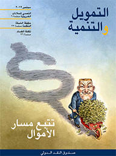
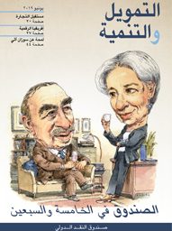
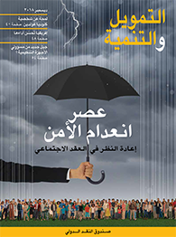
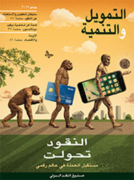
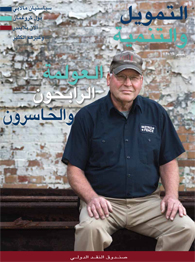
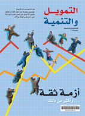

جميع مجلات التمويل والتنمية
حياة مديدة سعيدة : العوامل الديمغرافية والرفاهية الاقتصادية
مارس 2020
التغيرات في حجم وهيكل السكان في أي بلد تؤثر على طريقة مزاولتنا لعملنا وكيفية تقدمنا في العمر وأسلوب معيشتنا. ففي كثير من الاقتصادات المتقدمة واقتصادات الأسواق الصاعدة سوف يتعين على مجموعة متناقصة من الأشخاص في سن العمل دعم عدد متزايد من المتقاعدين. وسوف يتعين على بلدان أخرى إيجاد عدد هائل من الوظائف الجديدة حتى تتمكن من مجرد مواكبة وتيرة دخول الشباب إلى سوق العمل. وفي هذا العدد من مجلة التمويل والتنمية نبحث في التأثير الاقتصادي للعوامل الديمغرافية المتغيرة حول العالم.
ومن مقالات هذا العدد:
- ديفيد بلوم، الأستاذ في جامعة هارفارد، يناقش كيف يمكن أن تكون العوامل الديمغرافية محركا فعالا لعملية التنمية الاقتصادية ووتيرتها، في مقال بعنوان "السكان في عام 2020".
- وفي مقال بعنوان "حياة مديدة سعيدة"، يتناول أندرو سكوت، الأستاذ في كلية لندن لإدارة الأعمال، تفسير السبب في أن الحياة الأطول والأكثر إنتاجية تعني حدوث تغيرات كبيرة في القواعد القديمة بشأن الشيخوخة.
- وفي مقال بعنوان "عكس اتجاه الانخفاض الديمغرافي" تتعمق بوو لين تان، الأستاذ المساعد في جامعة سنغافورة الوطنية، في دراسة تجربة سنغافورة في محاولة رفع معدل الخصوبة، وتستخلص منها دروسا للبلدان الأخرى.
- وفي مقال بعنوان "اقتصاديات الانكماش: دروس من اليابان"، تستعرض جي هي هونغ وتود شنايدر، كلاهما من صندوق النقد الدولي، الأسباب التي تجعل من اليابان مختبر العالم للسياسات في التعامل مع شيخوخة السكان وتناقص عددهم.
- ويكتب جيوفاني بيري، الأستاذ في جامعة كاليفورنيا- دافيس، في مقال بعنوان "الطيور المهاجرة" عن كيفية مساهمة الهجرة الوافدة في حل الأزمة الديمغرافية، ولكن ليس بدون سياسات سليمة.
- وفي مقال بعنوان "تقدم في السن وليس إغراقا في الفقر" يرى ديفيد أماغلوبيلي، وإيرا دابلا-نوريس، وفيتور غاسبار، كلهم من صندوق النقد الدولي، أنه مع تقدم المجتمعات في العمر على مستوى العالم، يصير التكيف واجبا في معاشات التقاعد والسياسات العامة.
- ويكتب لورانس سامرز، الأستاذ بجامعة هارفارد، عن الحاجة إلى نُهُج جديدة للتعامل مع تباطؤ النمو، في مقاله بعنوان "قبول واقع الركود المزمن".
وفي هذا العدد أيضا نطالع في باب "شخصيات اقتصادية" لمحة يقدمها بيتر ووكر عن شخصية أوليفيا ميتشيل، مؤسِّسة بحوث التقاعد الحديثة. وضمن سلسلة مقالات "في خندق العمل" نسلط الضوء على مقابلة شخصية أجريت مع معالي وزير المالية الصومالي عبد الرحمن دعاله بايله الذي يرى في التنمية الاقتصادية أملا لبلاده. وفي هذا العدد أيضا نتحدث مع ثلاثة من الشباب حول مساعيهم لرسم مستقبلهم في الهند والمغرب وأوغندا.
اقتصاديات المناخ
ديسمبر 2019

في هذا العدد من مجلة التمويل والتنمية نبحث في التأثير الاقتصادي والمالي لسياسات تغير المناخ. ومع الزخم الحالي المتولد من التطورات التكنولوجية والابتكارات والاستثمارات والقطاع الخاص الديناميكي، فإننا نوجه الأنظار إلى حلول واقعية بإمكانها توفير فرص للنمو.
اقرأ في هذا العدد:
- السيدة كريستالينا غورغييفا، مدير عام صندوق النقد الدولي، تشرح أسباب دخولنا عصر التكيف في الوقت الحالي وضرورة تعجيلنا بالتحول العالمي إلى اقتصاد قليل الاستهلاك للكربون.
- ويكتب إيان بيري من صندوق النقد الدولي حول ما يمكن أن تحمله استراتيجيات تسعير الكربون، أو فرض ضريبة على التلوث، من حل لمعالجة أزمة المناخ العالمية.
- ويشرح مارك كارني، محافظ بنك إنجلترا المركزي، السبب في احتياج العالم لنظام مالي جديد ومستدام لوقف تغير المناخ.
- ويتناول كينيث غيلينغهام، من جامعة ييل، مناقشة السبب الذي يتطلب من صناع السياسات تحديد حجم الإنفاق على التدابير اللازمة لتخفيض انبعاثات غاز الدفيئة.
- وفي مقال الصحفي بوب سيميسان نستعرض كيف تعزز البلدان المعرضة للكوارث من قدرتها على مواجهة الأحداث الناجمة عن تغير المناخ بالاستثمار في بناء الصلابة.
- وفي مقال أفسانه بيشلوس ومينا مشايخي من شركة روك كريك العالمية لإدارة الأصول نستعرض كيف مهدت السندات الخضراء الطريق للتمويل المستدام وكيف يمكن أن تصل هذه الاستثمارات في نهاية المطاف إلى تريليونات الدولارات في المشروعات المرتبطة بالمناخ.
وفي هذا العدد أيضا نطالع في باب "شخصيات اقتصادية" لمحة عن شخصية الاقتصادي إدوارد غلايزر الأستاذ في جامعة هارفارد، الذي يرى في التوسع الحضري مسارا نحو الرخاء. وضمن سلسلة مقالات "في خندق العمل" نسلط الضوء في هذا العدد على مقابلة شخصية أجريت مع إيلان غولدفاين الرئيس السابق لبنك البرازيل المركزي، كما نبحث في الأسباب التي تجعل الوقت قد حان لزيادة الشفافية في إدارة وحوكمة شركات النفط الوطنية.
الجوانب المستترة في الاقتصاد العالمي
سبتمبر 2019
في هذا العدد من مجلة التمويل والتنمية نسلط ضوءا كاشفا على ما يسمى بالشبكة المظلمة من التعاملات السرية التي تفتح المجال أمام التهرب والتحايل الضريبيين، وغسل الأموال، والتدفقات المالية غير المشروعة، وأعمال الفساد.
ومن مقالات هذا العدد:
• يناقش السيد ديفيد ليبتون مدير عام الصندوق بالنيابة الجانب المظلم في الاقتصاد العالمي وكيف يكون إبعاد الأموال عن دائرة الظل مؤشرا على تحسين الحوكمة.
• ويبحث يانيك دامغارد، وتوماس إلكيير، ونيلز جوهانسن صعود الاستثمار الأجنبي المباشر الوهمي في الملاذات الضريبية وكيف تؤدي هذه الأنشطة إلى الإضرار بالتحصيل الضريبي في الاقتصادات المتقدمة والصاعدة والنامية.
• ويرى جاي بورسيل وإيفانا روسي، وهما من خبراء الصندوق، أن الشفافية تشكل سلاحا فعالا في المعركة ضد التدفقات المالية غير المشروعة والفساد والتهرب الضريبي.
• وتناقش أديتي كومار وإريك روزنباك، من مركز بيلفر في جامعة هارفارد، أصول وتطور الشبكة المظلمة حيث نشأت مؤخرا سوق سرية للأنشطة غير المشروعة.
• وفي مقال باولو ماورو، وباولو ميداس، وجان-مارك فورنييه، وهم من خبراء الصندوق، يذكر المؤلفون أن الفساد حول العالم يشوِّه أنشطة الدولة ويؤثر سلبا في نهاية المطاف على النمو الاقتصادي ومستوى معيشة المواطنين.
• ويتعمق توم ماشبرغ في سوق الفن ذات القواعد التنظيمية الفضفاضة - وهي أرضية خصبة لغسل الأموال – وينظر في الأسلوب الأمثل للتصدي لهذا التحدي.
وفي هذا العدد أيضا، نستعرض في باب "شخصيات اقتصادية" لمحة عن شخصية عاطف ميان، الأستاذ في جامعة برينستون، الذي يرى أن مكافحة عدم المساواة ضرورة أخلاقية. وفي سلسلة مقالات "في خندق العمل" نسلط الضوء على بيتر برايت كبير الاقتصاديين السابق في البنك المركزي الأوروبي، ونقدم في باب "عودة إلى الأسس" شرحا لمفهوم اختبارات القدرة على تحمل الضغوط.
الصندوق في الخامسة والسبعين
يونيو 2019
في هذا العدد الذي يصدر في الذكرى الخامسة والسبعين لتأسيس صندوق النقد الدولي، نتوجه إلى أذكى العقول لتقييم التحديات التي تواجه الصندوق وأفضل السبل للتصدي لها. وتشمل المقالات الأساسية ما يلي:
- مارتن وولف من جريدة فاينانشال تايمز يكتب عن الصندوق اليوم وغدا
- اللورد كينز يقوم بزيارة مفاجئة للصندوق الذي شارك في تأسيسه
- كريستين لاغارد تخط رسالة تدعو فيها لتجديد الالتزام بالتعاون الاقتصادي العالمي
- راغورام راجان، المحافظ السابق لبنك الاحتياطي الهندي، يشرح السبب وراء الحاجة إلى التعاون الدولي لجني منافع التدفقات الرأسمالية العابرة للحدود وتجنب مزالقها
- بينيلوبي كوجيانو غولدبيرغ، كبير الاقتصاديين في مجموعة البنك الدولي، يكتب عن مستقبل السياسة التجارية والنظام المتعثر للتجارة متعددة الأطراف
- محمد العريان، كبير المستشارين الاقتصاديين لدى مجموعة "أليانز"، يكتب أن بإمكان الصندوق (ويتعين عليه) إصلاح ذاته في عالم سريع التغير
- فيرا سونغوي من الأمم المتحدة تستكشف كيف يمكن للتكنولوجيا أن تكون منصة انطلاق لنمو أسرع وأكثر احتواءً للجميع في إفريقيا
- المؤرخ آدم توز يكتب أن على الصندوق في فترة ما بعد الأزمة أن يتجاوز نطاق دوره كمقرض أخير.
وفي هذا العدد أيضا، يقدم مقال "شخصيات اقتصادية" ملامح من حياة سوزان آثي، من جامعة ستانفورد، التي تعمل على إدخال تقنيات تعلُّم الآلة في علوم الاقتصاد. وتحت باب "في خندق العمل" يقدم العدد كلير أكامانزي، الرئيس التنفيذي لمجلس التنمية في رواندا، بينما يفسر باب "عودة إلى الأسس" نظام ضرائب الكربون.
المرأة والنمو
مارس 2019
المرأة تدعم النمو الاقتصادي، والنمو بدوره يدعم المرأة، وهذا ما يكتشفه العالم في الوقت الحاضر. هذا العدد من مجلة التمويل والتنمية، الذي يتزامن صدوره مع يوم المرأة العالمي، يبحث في السبب الذي يجعل تمكين المرأة ليس مجرد إجراء صحيح من الناحية الأخلاقية، بل هو منطقي أيضا من الناحية الاقتصادية. ويتضمن هذا العدد ذو الغلاف المميز المقالات التالية:
- في مستهل طرح هذا الموضوع، تتناول السيدة كريستين لاغارد مدير عام صندوق النقد الدولي الأسباب التي تجعل تمكين المرأة مطلبا حيويا لاقتصاد العالم وشعوبه
- وفي موضوع الغلاف تكتب إيرا دابلا-نوريس وكالبانا كوتشار، وكلاهما من الصندوق، عن ازدياد الفوائد المترتبة على إشراك المزيد من النساء في القوة العاملة أكثر مما كان
- وتتناول رئيسة وزراء آيسلندا السيدة كاترين ياكوبسدوتر مناقشة أثر القضايا المرتبطة بنوع الجنس على تغيير المفاهيم الاقتصادية
- وكتبت آشلين ماثيو عن كفاح رائدات الأعمال في الهند لكسر الحواجز أمام بدء مشروعات جديدة
- وكتبت راخي كومار من شركة "ستيت ستريت" للاستشارات العالمية أن هناك طفرة في اهتمام المستثمرين بكيفية تشجيع التنوع بين الجنسين في مجالس إدارات الشركات، وعلى مستوى كبار المسؤولين التنفيذيين
- وكتبت سارة غاميدج بالمشاركة مع نزيهة سلطانة ومانون مورون أنه بالنظر إلى التكلفة المستترة للرعاية غير مدفوعة الأجر يتعين على القطاعين العام والخاص العمل معا على تشجيع المساواة بين الجنسين
- وتتناول ساره هندريكس من مؤسسة غيتس مناقشة السبب وراء قيام مؤسسات الخدمات المالية الرقمية بإلغاء دور الوسطاء لتحقيق تكافؤ الفرص
- وكتبت كازو ياماغوتشي من جامعة شيكاغو أن غياب المساواة بين الجنسين في الفرص المهنية وساعات العمل الطويلة يرسخان التفاوت في الأجور بين الرجل والمرأة
وفي هذا العدد أيضا نستعرض موضوعات تشمل دروسا مقدمة من روما القديمة عن أهمية التنمية المستدامة، وقوانين المواطنة الشمولية التي غالبا ما تدعم التنمية الاقتصادية، واحتدام المنافسة العالمية المواهب في مجال التكنولوجيا، والسبب في تزايد التشاؤم في تنبؤات النمو طويل الأجل رغم فورة التغير التكنولوجي.
وضمن سلسلة موضوعاتنا تحت باب "شخصيات اقتصادية" نقدم لمحة عن شخصية برانكو ميلانوفيتش، أحد رواد الباحثين في مجال عدم المساواة. وتقدم سلسلة مقالاتنا بعنوان "في خندق العمل" مقابلة شخصية متعمقة مع السيدة إلفيرا نابيولينا، محافظ بنك روسيا المركزي، حول دور السياسات الجريئة في المساعدة على تجنب تفاقم حالة من الركود العميق، وفي سلسلة "عودة إلى الأسس" نتساءل عما إذا كان تطبيق الحد الأدنى للأجور يساعد العمالة.
عصر انعدام الأمن : إعادة النظر في العقد الاجتماعي
ديسمبر 2018
بينما يسعى العالم للتصدي إلى تزايد التيارات الشعبوية والقومية، يتبدى لنا بوضوح أن انعدام الأمن الاقتصادي يشكل جوهر مشاعر الاستياء السائدة في معظمها. ويستعرض آخر عدد من مجلة التمويل والتنمية، الذي تم إعداده بالاشتراك مع "كلية لندن للاقتصاد والعلوم السياسية"، مدى الحاجة إلى إعادة النظر في العقد الاجتماعي – بما في ذلك كيفية رعاية المجتمع لكبار السن والشباب وأصحاب الإعاقات، ومن تعرضوا لظروف عصيبة – بغية خلق الشعور بالأمن في اقتصادنا الذي تسوده العولمة والتغيرات السريعة.
- في موضوع غلاف هذا العدد كتبت السيدة نعمت شفيق، مدير كلية لندن للاقتصاد والعلوم السياسية، إن تبديد المخاوف من التكنولوجيا والعولمة يتطلب إعادة النظر في حقوق المواطنة والتزاماتها.
- وذكر ميشال روتكووسكي من البنك الدولي في مقاله أن الطبيعة المتغيرة للعمل في سبيلها لإحداث انقلاب في أوضاع الوظائف التقليدية ومزاياها وأن هناك حاجة إلى نظم جديدة لا تعتمد على عقود التوظيف المعتادة.
- ويذكر كين ويلز، الرئيس السابق لمكتب بلومبرغ نيوز في بيجين، أن الصين تسعى جاهدة إلى تطويع نظم الحماية الاجتماعية لتلبية احتياجات اقتصاد السوق.
- وفي ظل التغيرات الجذرية التي طرأت على أسواق العمل والتكنولوجيا والحياة الأسرية يكتب نيكولاس بار من كلية لندن للاقتصاد والعلوم السياسية أن دور دولة الرعاية أصبح ضروريا أكثر من أي وقت مضى.
وفي هذا العدد أيضا نستعرض الجهود المبذولة حول العالم لمنع المجرمين من غسل أموالهم التي تقدر بالتريليونات، وكيف أن التكامل الاقتصادي في إفريقيا يمكن أن يجعل لهذه القارة دورا مؤثرا في العالم، ونقدم لمحة عن دورة تدريبية في جامعة "ييل" الأمريكية حيث يقوم فرسان حقبة الأزمة المالية العالمية بتمرير خبرتهم إلى الجيل القادم. ونقدم في سلسلة مقالاتنا "شخصيات اقتصادية" لمحة عن حياة كلوديا غولدين، صاحبة العمل الرائد في دراسة دور المرأة في الاقتصاد، ونستعرض الدخل الأساسي المعمم في باب "عودة إلى الأسس".
جنوب شرق آسيا: منطقة تنطلق نحو مستقبل مشرق
سبتمبر 2018
شهدت جنوب شرق آسيا، أسرع مناطق العالم نموا، أزمات مالية طاحنة، وصراعات مسلحة، وكوارث طبيعية تفوق الوصف. ومع ذلك، تمكنت من الاستفادة من الإمكانات التي أتاحتها العولمة لكي تبني اقتصادات ذات قدرات تنافسية تسهم بدور حيوي في سلسلة العرض العالمية، مما أدى لانتشال الملايين من براثن الفقر. ويستعرض آخر عدد من مجلة التمويل والتنمية التحديات العديدة التي تواجه بلدان منطقة "آسيان"، بما في ذلك التهديدات الحقيقية التي تفرضها عليها عوامل تغيُّر المناخ، وسرعة شيخوخة السكان في مجتمعاتها، والاتجار بالبشر، والتحولات الجغرافية-السياسية. ونتناول بالمناقشة الفرص المبشرة التي تتيحها التكنولوجيا الرقمية، وإدماج المرأة في القوى العاملة، والتعاون الوثيق بين اقتصادات المنطقة.
- فمن التحول الديمغرافي إلى التغير المناخـي، تواجه منطقة جنوب شرق آسيا عددا كبيرا من التحديات، وسيتطلب التغلب عليها الصمود والمرونة، وفقا لما كتبه "مانو باسكاران" في قصة غلاف هذا العدد.
- ونصيب الفرد من الدخل القومي في جنوب شرق آسيا بات يسجل معدلات نمو من بين أسرع المعدلات على مستوى العالم، كما كانت المنطقة في العام الماضي رابع أكبر المساهمين في النمو العالمي بعد الصين والهند والولايات المتحدة. كذلك حدث تحسن هائل في مستويات المعيشة، وهبوط حاد في معدلات الفقر. فما السبب في هذا السجل الحافل من النجاح؟ ويتناول "تشانغ يونغ ري" هذه الأمور برؤية متعمقة.
- وفي فييت نام، أدت الحرب إلى تراجع نسبي في عدد السكان من الذكور، مما نتج عنه فجوة في القوة العاملة تمكنت النساء من سدها مع بدء نمو الاقتصاد مجددا،>وفقا لما ورد في مقال اشترك في كتابته كل من أنغانا بانيرجي، وساندل لاتشوايو، وألبا جونبالاج، وآن فان لي. وبينما تتقدم المرأة حاليا صفوف القوة العاملة في آسيا، فإن فييت نام مثال بارز على ذلك لأسباب عديدة.
وفي هذا العدد أيضا، نحقق في الكارثة الخفية المتمثلة في الاتجار بالبشر في جنوب شرق آسيا، ونتناول مناقشة تحديات تغير المناخ في المنطقة والفرص المتاحة للتصدي لها، كما نستعرض السبل العديدة التي تتبعها آسيا في تطبيق الابتكار الرقمي، ونتحدث مع القادة الشباب الذين يستعينون بالتكنولوجيا لخلق مستقبل أكثر إشراقا. وفي هذا العدد نقدم ضمن سلسلة مقالاتنا "شخصيات اقتصادية" ملامح عن حياة المبشر بجدوى البيانات الضخمة "راج شيتي"، أستاذ الاقتصاد بجامعة ستانفورد الأمريكية، ونجري مقابلة مع "لورا ألونسو"، رئيسة مكتب مكافحة الفساد في الأرجنتين، حول الأسباب الداعية لضرورة مكافحة الفساد على العديد من الجبهات. ونلقي كذلك نظرة متعمقة على كيفية مساهمة المستويات العالية من تحويلات العاملين في نشوء حلقة مفرغة يتعاقب فيها الركود والاعتماد الاقتصاديين، وكيف أن سرعة انتشار المعرفة هي من المنافع المهمة للعولمة، وكيف أن إفريقيا جنوب الصحراء تزداد تكاملا فيما بينها، وهو تطور سيدعم النمو لكنه لا يخلو من المخاطر.
النقود تحولت: مستقبل العملة في عالم رقمي
يونيو 2018
في السنوات القليلة الماضية، استولت التكنولوجيا المالية على خيال العالم حينما عرضت بدائل للوسائل التقليدية لأداء المدفوعات. آخر أعداد مجلة التمويل والتنمية يبحث ما إذا كانت الرقمنة ستعيد تعريف النقود—وعواقبها المحتملة، الحسنة منها والسيئة.
- الثورات التكنولوجية بطبيعتها تسبب ارتباكا كبيرا. لكن السياسات الذكية يمكن أن تخفف ألم الارتباك قصير الأجل، وتمهد الطريق للمكاسب المجتمعية طويلة الأجل، يكتب مارتن مولآيزن .
- هل ستكون هناك حاجة إلى البنوك المركزية في سوق المدفوعات في المستقبل؟ ستيفان إنغفيس، محافظ بنك السويد المركزي، يناقش انعكاسات تحول بلده إلى النقود الرقمية.
- ارتبطت العملات الجديدة على مر التاريخ بصفات روحانية، والبيتكوين ليست باستثناء عن ذلك، يقول هارولد جيمس، المؤرخ من جامعة برينستون، في بحثه عن الاختلالات النقدية بمرور الوقت.
في هذا العدد أيضا، تاماس غيدوش يبحث كيف أصبحت الجريمة الإلكترونية الآن صناعة ناضجة تقوم على مبادئ تتشابه كثيرا مع مبادئ الأعمال المشروعة. و"شخصيات اقتصادية" يقدم لمحة عن ديفيد دونالدسون من معهد ماساتشوستس للتكنولوجيا. ومزج اليابان بين الذكاء الاصطناعي وصناعة الروبوتات ربما يحمل الإجابة عن الانكماش السريع لقوة العمل لديها، كما يقول تود شنايدر، وجي هي هونغ، وآن فان لي.
تحقيق التوازن: إدارة المال العام
مارس 2018
المستقبل في كثير من البلدان بات رهنا للدين العام والخاص المرتفع، الأمر الذي يهدد النمو ما لم يعالج جيداً. وفي هذا العدد من مجلة التمويل والتنمية نطرح السؤال "ما مقدار الدين الذي يعتبر مبالغا فيه؟"
- هل ينبغي أن تلجأ البلدان إلى رفع الضرائب أم تخفيض الإنفاق لكي تخفِّض ديونها؟ تخلص دراسة بحثية جديدة من إعداد ألبرتو أليسينا وكارلو فافيرو وفرانشيسكو جيافاتسي إلى أن النمو يتعرض لصدمات أقل في البلدان التي تخفض الإنفاق.
- ومع تزايد القلق بشأن عدم المساواة قد يتعذر تبرير أي تخفيضات في الإنفاق الاجتماعي. ويستعرض كبير الاقتصاديين سابقا في البنك الدولي، فرانسوا بورغينيون، أفضل سبل لعلاج تزايد عدم المساواة وتقدير المفاضلات الصعبة في هذا الشأن.
- ويدعو "فانويل بوكوسي"، من المنتدى الإفريقي والشبكة المعنية بالدين والتنمية، إلى إيجاد حلول جديدة لكسر الحلقة المفرغة التي تتعاقب فيها آثار الديون والفقر في البلدان منخفضة الدخل.
وفي هذا العدد أيضا، نتابع مقال رئيس إستونيا السابق، توماس هندريك إلفيس، الذي يوضح كيف يمكن أن تجعل الرقمنة حياة الناس أسهل بكثير. ويقدم باب "شخصيات اقتصادية" لمحة عن شخصية أنغاس ديتون الحائز على جائزة نوبل والذي يربط بين النظرية والسياسة وحياة الناس. كذلك نتابع في باب "تأمل معي" كيف أنه يجب على البلدان إعطاء أولوية للتعلم وليس التعليم المدرسي وحده لكي تفي بوعودها في مجال التعليم.
الشرق الأوسط في حالة تغيير
ديسمبر 2017
يركز هذا العدد من مجلة التمويل والتنمية على منطقة الشرق الأوسط وشمال إفريقيا، فيحصر نتائج التحول السريع في المنطقة منذ الانتفاضات العربية عام 2011 – وهي الفترة التي أحيت آمال الملايين في مستقبل أفضل، وألحقت اليأس بأعداد أخرى لا حصر لها.
- الطريق إلى الاستقرار والازدهار في المنطقة هو من خلال بناء المؤسسات واقتسام السلطة وتحقيق النمو الاحتوائي للجميع، وفقا لما كتبه مروان المعشّر من مؤسسة كارنيغي للسلام الدولي.
- ويقول جهاد أزعور، من صندوق النقد الدولي، إن القضايا الاجتماعية/الاقتصادية غير المحسومة كانت السبب الرئيسي في الانتفاضات وإن معالجة هذه المشكلات ضرورية لتحقيق الاستقرار في المستقبل.
- والصراع الدائر في المنطقة يخلف آثارا فادحة على الاقتصادات، وفقا لما كتبه اقتصاديو الصندوق "فيل دي إيموس" و"غايل بيير" و"بيورن روثر".
- ولكن هناك بشائر أمل، وفقا لما كتبه الصحفي كامبل ماكديارميد، مشيرا إلى أن الحكومات في أنحاء المنطقة تعكف حاليا على إطلاق صناديق للتكنولوجيا، حيث تتطور بعض المشروعات المبتدئة لتصبح شركات كبيرة توفر فرص العمل.
- ويقول رابح أرزقي من البنك الدولي إن الطاقة الشمسية وغيرها من أشكال الطاقة المتجددة تحمل أيضا الأمل مع سعي اقتصادات المنطقة الغنية بالنفط إلى تنويع اقتصاداتها.
وفي سلسلة مقالاتنا الجديدة بعنوان "في خندق العمل" يتناول إبراهيم سيف مناقشة السبب في أهمية بناء توافق الآراء لنجاح أي إصلاح لدعم الطاقة. وفي هذا العدد أيضا، كتبت نازيلا فتحي في مقالها أن زيادة مشاركة المرأة في القوة العاملة بالعالم العربي يمكن أن تعزز النمو الاقتصادي، ولكن هناك عقبات متأصلة. وفي أحدث مقالات سلسلة "شخصيات اقتصادية" نتعرف على ملامح شخصية ديفيد أوتور، الاقتصادي في معهد ماساتشوستس للتكنولوجيا وصاحب الإنجازات الرائدة حول أثر الواردات على سوق العمل في الولايات المتحدة. وضمن سلسلة "تأمل معي" نستعرض المعلومات المصورة التي تبين كيف أن العبء الأكبر لتغير المناخ يقع على البلدان الفقيرة، رغم أن ظروفها أسوأ من أن تتحمله.
التعاون العالمي: صراع من أجل الصعود
سبتمبر 2017
يبحث عدد سبتمبر 2017 من مجلة التمويل والتنمية في واحد من أهم التحديات التي تواجه العالم، وهو كيفية التعامل مع المشكلات العالمية المعقدة في ظل تزايد عدم اليقين بشأن مزايا العمل متعدد الأطراف والتكامل العالمي المستمر.
- البروفيسور هارولد جيمس، الأستاذ في جامعة برنستون الأمريكية والمؤرخ لصندوق النقد الدولي، يلقي نظرة عامة على النظام الاقتصادي العالمي لما بعد الحرب العالمية الثانية والتحديات الجديدة التي تواجهه؛
- ويتناول مايكل كين، الخبير الاقتصادي في الصندوق، مناقشة الضغوط المتزايدة على الإطار القديم للنظام الضريبي الدولي ودورها في اتجاه صناع السياسات نحو إعادة النظر في فعاليته؛
- ويرى توباياس أدريان وأديتيا ناراين أن التوصل إلى منهج متفق عليه دوليا للتنظيم المالي هو مطلب حيوي من أجل الحفاظ على سلامة النظم المالية المختلفة؛
- ويرى دوغلاس فرح، رئيس شركة "آي. بي. آي. للاستشارات"، أن الشفافية حافز سلبي لأعمال غسل الأموال وتمويل الإرهاب، وذلك في سياق استعراض كيفية قيام الجماعات الإجرامية والميليشيات المسلحة بنقل الأموال حول العالم؛
- ويلقي توماسو مانشيني غريفولي، الخبير الاقتصادي في الصندوق، نظرة متعمقة على الطرق التي تستخدمها التكنولوجيات الجديدة في إعادة تشكيل صناعة الخدمات المالية؛
- ويقول إسوار براساد، الأستاذ في جامعة كورنيل، إن الصين ستواصل القيام بدورها كقوة اقتصادية عالمية كبرى باستخدام وسائل مباشرة وغير مباشرة.
وفي هذا العدد أيضا، نتابع ضمن سلسلة مقالات "شخصيات اقتصادية" لمحة عن شخصية ريكاردو هاوسمن الذي كرس حياته للكشف عن القوى الدافعة للتنمية الاقتصادية؛ وضمن سلسلة مقالات "في خندق العمل" يتناول صانع السياسات "بينو ندولو " مناقشة السبب وراء ضرورة حصول عدد أكبر من الناس على الخدمات المالية؛ وتوضح صفحة البيانات المصورة في سلسلة "تأمل معي" كيف أصبح نصيب العمالة من كعكة الدخل أصغر.
جيل الألفية ومستقبل العمل
يونيو 2017
يبحث هذا العدد من مجلة التمويل والتنمية في الفرص الاقتصادية والتحديات أمام جيل الألفية، وهو جيل غالبا ما يوصف بأنه قوي العزيمة، وواسع الحيلة، وبالتأكيد غير تقليدي.
- يمثل جيل الألفية حوالي 40% من العمالة المستقلة في الولايات المتحدة والتي تكسب دخلها الأساسي من العمل لحسابها الخاص. ويقدم البروفسور آرون سونداراجان، الأستاذ في جامعة نيويورك، وصفا لمكان العمل حيث تتغير العلاقة بين الموظف وصاحب العمل تغيرا جذريا في ظل الاقتصاد الرقمي.
- ويقول موريسيو سوتو، الاقتصادي في صندوق النقد الدولي، ناصحا الشباب إن عليهم البدء بالادخار الآن من أجل التقاعد. فمعاشات التقاعد العامة لن توفر نفس القدر الذي كانت توفره للأجيال السابقة.
- وتوضح الاقتصادية نجوى رياض من صندوق النقد الدولي أنه مع مواصلة تغير مكان العمل سيحتاج جيل الألفية إلى التعلم وتحديث مهاراتهم باستمرار لمواكبة الثورة التكنولوجية الحالية.
- أدت زيادة تكاليف التعليم العالي، وقيود الحصول على القروض الإسكانية، وانخفاض معاشات التقاعد العامة إلى عدم قدرة جيل الألفية على مراكمة الثروة بنفس القدر الذي حققه أباؤهم وهم في نفس أعمارهم، وفقا لما ذكرته ليزا دتلينغ وجوان شو وكلاهما تعملان كاقتصادي أول في مجلس محافظي البنك الاحتياطي الفيدرالي في الولايات المتحدة.
- أما السيدة كريستين لاغارد، مدير عام صندوق النقد الدولي، فتقدم للشباب نصيحة الحياة المهنية في القرن الحادي والعشرين.
- ويتحدث أبناء جيل الألفية من أنحاء العالم عن أهم التحديات التي تواجه جيلهم.
وفي سلسلة مقالاتنا الجديدة بعنوان "في خندق العمل" يصف صناع السياسات ما يواجهونه من تحديات وهم يخوضون مسيرة الإصلاح بهدف تعزيز النمو زرفع الإنتاجية وتوفير المزيد من الوظائف. وفي هذا العدد أيضا، كتب الصحفي آلان ويتلي أن المدفوعات الافتراضية ربما تحل محل استخدام النقد، ولكن ليس تماما وليس في كل مكان. ويتناول هذا العدد أيضا قضية علاقات المراسلة المصرفية الي خضعت للضغوط في عدة بلدان. وفي سلسلة مقالات "شخصيات اقتصادية" نقدم لمحة عن شخصية "روبرت غوردون" الذي يتوقع أن يؤثر تباطؤ الابتكار على التقدم الاقتصادي. ونعرض في هيئة معلومات مصورة ضمن سلسلة "تأمل معي" توضيحا للتقدم الذي تحرزه بعض البلدان في إصلاح دعم الطاقة.
معضلة النمو
مارس 2017
هل ينبغي للاقتصادات المتقدمة في العالم أن تستسلم لحالة من النمو الاقتصادي الطفيف أو من عدم النمو؟ أو هل يراودها أمل في قدرة السياسات على إنعاش الإنتاجية والنمو الاقتصادي الدائم؟ هذا العدد من مجلة "التمويل والتنمية" يبحث هذه التساؤلات وغيرها.

- التفاؤل العالمي ربما تحول إلى خوف من ركود طويل الأجل لكن تراجع نمو الإنتاجية كان واضحا منذ فترة طويلة قبل وقوع الأزمة، كما يقول نيكولاس كرافتس من جامعة وارويك.
- ويعتقد كل من غوستافو أدلر ورومان دوفال، الخبيران الاقتصاديان في صندوق النقد الدولي، في إمكانية إنعاش الإنتاجية العالمية عن طريق معالجة موروثات الأزمة المالية—وذلك مثلا عن طريق تعزيز الطلب في المجالات التي يظل فيها ضعيفا، ومساعدة الشركات في إعادة هيكلة الدين، وتقوية الميزانيات العمومية للبنوك، وإعطاء إشارات أوضح بشأن السياسة الاقتصادية مستقبلا.
- رونالد لي من جامعة كاليفورنيا في بيركلي، وأندرو ميسون من جامعة هاواي في مانوا يوضحان أنه مع تقدم السكان في السن، يتباطأ نمو إجمالي الناتج المحلي، وتزيد تكاليف الإعالة، وتعاني الميزانيات الحكومية من الضغوط.
- دايان كويل من جامعة مانشستر تعرض مزايا وعيوب الاعتماد على إجمالي الناتج المحلي كمقياس لصحة الاقتصاد.
- برادفورد دي لونغ من جامعة كاليفورنيا في بيركلي، وجون تايلور من جامعة ستانفورد، يعرضان آراءهما بشأن الركود المزمن.
- تاو زانغ، نائب مدير عام صندوق النقد الدولي، يقول إن الأسواق الصاعدة ينبغي أن تتقاسم ثمار نموها على نحو منصف.
وفي هذا العدد أيضا، إسوار براساد من جامعة كورنيل يقول إن ارتفاع سعر اليوان الصيني لا يعني أنه سيكون عملة مسيطرة. وتناقش مقالات أخرى كيف يمكن أن يؤدي عدم المساواة إلى خنق النمو، وما إذا كان يمكن للمال أن يشتري السعادة، وكيف يعود توسيع نطاق الخدمات المالية بالمنفعة على السكان والشركات وكذلك على المجتمع، ودور حماية الغابات في مكافحة تغير المناخ، وكيف يمكن أن يؤدي الحد من تغير المناخ إلى تخفيض قيمة موارد الوقود الأحفوري في كثير من أنحاء العالم. وسلسلة مقالات "شخصيات اقتصادية" تقدم ملامح عن حياة كريستين فوربس من معهد ماساتشوستس للتكنولوجيا، التي قضت معظم حياتها المهنية تجمع بين العمل الأكاديمي وصنع السياسات. والمعلومات التصويرية التفاعلية في باب "تأمل معي" تبين أن السياسات التي تساعد على إدماج المرأة في القوى العاملة تعود بالنفع على الجميع.
ديسمبر 2016
العولمة: الرابحون والخاسرون
يبحث هذا العدد بعنوان "العولمة: الرابحون والخاسرون" في الآثار الإيجابية والسلبية للعولمة.
ويكتب "سباستيان مالابي" في مقاله أنه على الرغم من تراجع تدفقات رؤوس الأموال وركود حركة التجارة فإن أوضاع التجارة والتمويل ربما تكون في واقع الأمر في طريقها لتعديل المسار لكي تحقق مستويات أكثر قدرة على الاستمرار بما يتماشى مع العولمة المستمرة. ويلقي موريس أوبستفلد، كبير اقتصاديي الصندوق، نظرة متفحصة على التجارة ويقول إن "العولمة تتيح الفرصة لتحقيق مكاسب اقتصادية للجميع، ولكن لا يوجد ما يضمن تحقق هذه الفرصة في غياب التدابير الحاسمة من جانب الحكومات لدعم الفئات التي تعاني من الآثار غير المباشرة للعولمة".
أما فرانسيس أوغريدي، أمين عام مؤتمر نقابات العمال في المملكة المتحدة، فتذكّرنا بالدور البنّاء الذي يمكن للنقابات العمالية القيام به في تقييم أثر التحركات باتجاه العولمة على وظائف العاملين وحقوقهم ومستوياتهم المعيشية. ويذهب بول كروغمان في مقاله إلى أن التجارة تتمتع بحرية ملحوظة فعلا بالمقاييس التاريخية، وأن تعطُّل المسيرة نحو سياسة تجارية واستثمارية أكثر تحررا – مع تفادي وقوع حرب عالمية تجارية – لن يؤدي لحدوث أي مأساة. ويطلق كومي نايدو، الناشط في مجال حقوق الإنسان من جنوب إفريقيا، مناشدة مفعمة بالحماس لتوزيع الثروة على نحو أكثر عدالة.
ويبرز هذا العدد من مجلة التمويل والتنمية بعض "الملامح الإنسانية للعولمة". فالعمال في الاقتصادات المتقدمة هم من أكثر المتضررين من الآثار السلبية غير المباشرة للعولمة. فكان على جون باورز، العامل في أحد المصانع الأمريكية والذي تظهر صورته على غلاف هذا العدد، أن يتدرب من جديد للعمل كفني كهربائي ويعتبر نفسه محظوظا لأن لديه وظيفة.
وفي هذا العدد أيضا، نقدم لمحة عن شخصية الخبير الاقتصادي من جامعة برينستون الأمريكية، ليونارد وانتشيكون، مؤسس الكلية الإفريقية للاقتصاد".
سبتمبر 2016
التكنولوجيا الذكية تطلق لجناحيها العنان

يتناول هذا العدد الجديد بعنوان "التكنولوجيا الذكية تطلق لجناحيها العنان" مدى قدرة الآلات الذكية والذكاء الاصطناعي على إحداث التحوُّل في الحياة الاقتصادية.
- يبحث هال فاريان، كبير الاقتصاديين في شركة غوغل (Google)، في الوسائل التي تتيحها لنا التكنولوجيا متزايدة القوة من أجل التحديث، بحيث نتمكن من استبدال الممارسات الأقل كفاءة بأخرى أعلى كفاءة. وفي مقالات أخرى حول موضوع الغلاف نتناول توثيق مدى قدرة التكنولوجيا على إحداث التحوُّل الاقتصادي؛ وتأثير البيانات الضخمة على الاقتصاد والتمويل؛ وظهور نوع جديد من شركات التكنولوجيا المالية المختلطة، التي يطلق عليها اسم "فينتك" (Fintech)؛ ودور التعلُّم عن بُعد في تحسين عملية صنع السياسات.
- ولكن هناك بعض الجوانب السلبية أيضا في التكنولوجيا. وفي هذا السياق يستعرض اقتصاديو الصندوق "آندرو بيرغ" و"إدوارد بوفي" و"فيليب زانا" نموذجا لاحتمالات تسبب الروبوتات الماهرة في تفاقم عدم المساواة. وتمثل مخاطر الأمن الإلكتروني، والسرقات الإلكترونية، والإلهاء الرقمي أحد الجوانب المظلمة للتكنولوجيا التي تقلل من مزايا هذا العصر الرقمي.
- وفي هذا العدد أيضا، نبحث في تأثير تحويلات العاملين على السياسة النقدية، وإلغاء الدولرة في بيرو، وفعالية الشراكات بين القطاعين العام والخاص، وغير ذلك من الموضوعات. وختاما، نقدم لمحة عن شخصية السيدة نانسي بيردسول، الرئيس السابق لمركز التنمية العالمية، التي كرَّست حياتها العملية لمحاربة الفقر وعدم المساواة من خلال الدراسات البحثية المثيرة للاهتمام.
يونيو 2016
إفريقيا: تقلبات النمو
يركز هذا العدد من مجلة "التمويل والتنمية" على إفريقيا. ففي الوقت الذي تخضع فيه قصة "نهضة إفريقيا" للتمحيص الدقيق، يشير مؤلفونا إلى أنه برغم تزايد صعوبة الأوضاع عما كانت عليه على مدى عقد من الزمان، كثير من بلدان المنطقة في وضع يؤهله للنجاة من هذه العاصفة.
- ستيفن راديليت من جامعة جورج تاون، ينظر في مقاله الذي يتخذ طابع الاستعراض العام برؤية أوسع إلى الظروف الراهنة ويخلُص إلى أن النمو سيتباطأ على الأرجح في السنوات القليلة القادمة، لكن إفريقيا في وضع أفضل يؤهلها للتعامل مع هذا الهبوط بفضل أوجه التحسن الملحوظة في الحوكمة والإدارة الاقتصادية السليمة، واعتمادها سياسات اقتصادية واجتماعية أفضل. ويقول إن آفاق النمو طويلة المدى راسخة في البلدان التي تنوع أنشطتها الاقتصادية، وتزيد قدراتها التنافسية، وتواصل تعزيز مؤسسات الحوكمة.
- وعلى نفس المنوال، أنطوانيت ساييه، مدير الإدارة الإفريقية بالصندوق، في باب "كلام صريح"، تذهب إلى أن الدوافع الأساسية للنمو على مدار العقد الماضي لا تزال قائمة وأن تعديل السياسات النقدية وسياسات المالية العامة يمكن أن يساعد على شحذ النمو القابل للاستمرار في المنطقة.
- وتركز مقالات أخرى على التكنولوجيا الرقمية التي تزيد إمكانات الحصول على تمويل، والاتفاقات الاقتصادية الإقليمية التي تدعم توثيق الروابط بين الأعمال، وزيادة مشاركة المرأة في القوى العاملة، والتركيز على تحسين البنية التحتية والرعاية الصحية. وعلى منوال آخر، ستيف أومانوفيمي يعطينا لمحة سريعة عن قطاع يدل على ديناميكية إفريقيا: إنها صناعة الأفلام في نيجيريا أو "نوليوود"، وهي واحدة من أكبر صناعات الأفلام في العالم قياسا بعدد الأفلام التي تنتجها.
- وفي أجزاء أخرى من هذا العدد، روبرت غوردون، الذي صدر كتابه الأخير بعنوان "صعود وهبوط النمو الاقتصادي الأمريكي"، فأثار الكثير من النقاش، يتحدث عن الاحتمالات المتوقعة لمضي فترة طويلة من النمو الضعيف في الولايات المتحدة. وأخيرا، يقدم براكاش لونغاني لمحة عن الاقتصادي الثائر داني رودريك.
مارس 2016
التكدس الكبير: الضغوط السكانية العالمية
يركز هذا العدد من مجلة التمويل والتنمية على الديناميكيات المؤثرة التي تحدد سمة التغير السكاني في الوقت الحاضر. ويسلط مؤلفو المقالات الضوء على القوى المتعددة – كالشيخوخة والهجرة والتوسع الحضري وامتداد الأعمار- التي تشكل المشهد الديمغرافي العالمي المتغير.
- يعرض البروفيسور ديفيد بلوم، الأستاذ في جامعة هارفارد، مسحا للقوى التي تشكل طابع النمو السكاني في العصر الحالي ويقترح مجموعة من البدائل للتعامل مع ما أسماه "أكبر تحول ديمغرافي في تاريخ البشرية".
- ويبحث بينيديكت كليمنتس وكاميل ديبزاك وموريشيو سوتو في انعكاسات الانكماش السكاني وشيخوخة السكان على المالية العامة في الاقتصادات المتقدمة واقتصادات الأسواق الصاعدة.
- وتخلص يوكو كينوشيتا وكالبانا كوتشارإلى قدرة المرأة على المساهمة في تحييد أثر المشكلات الناجمة عن شيخوخة السكان وانكماش القوة العاملة.
- ويوضح فيمال تاكور وجون ويكمان-لين أن إفريقيا جنوب الصحراء يمكنها تحقيق مكاسب كبيرة من عدد سكانها المتنامي إذا ما أحسنت إدارة التحول الديمغرافي.
وفي أجزاء أخرى من هذا العدد، يناقش السيد ديفيد ليبتون، النائب الأول لمدير عام الصندوق، مدى حاجة الصين لإجراء إصلاحات جريئة على مستوى المالية العامة؛ ويستعرض السيد مسعود أحمد خواطره حول انخفاض أسعار النفط؛ ويبحث بول كاشين وكاميار محدس ومهدي رئيسي التأثير الاقتصادي لظاهرة النينيو. ويرتاد رابح أرزقي وفريدريك فان در بلوغ وفريدريك توسكاني دربا لم يكن مطروقا من قبل في مقال حول أحدث الاتجاهات في التعامل مع اكتشافات الموارد الطبيعية. ويقدم بيتر ووكر لمحة عن حياة "ديفيد كارد" رجل الاقتصاد الذي شكك من خلال عمله في الفكر التقليدي عن الحدود الدنيا للأجور والهجرة والتعليم.
وأخيرا يتضمن هذا العدد تكريما لذكرى أيقونة موسيقى البوب "ديفيد بوي". وتحدثنا مديرة التحرير السيدة مارينا بريموراك عن حكاية ظهور صورة هذا الموسيقي على واجهة "جنيه بريكستون" – وهو العملة المحلية المتداولة في حي "بريكستون" بجنوب لندن حيث وُلِد "بوي".
ديسمبر 2015
توفير الطاقة لكوكبنا
ينظر هذا العدد في تحديات الموازنة بين الطلب الضخم على الطاقة الكافية لتعزيز النمو والتنمية الاقتصاديين من ناحية والحاجة الملحة لإجراء خفض حاد في انبعاثات الكربون، المساهم الأساسي في تغير المناخ، من ناحية أخرى.
- رغم حالة التجاذب بين السعي لتحقيق النمو من ناحية واستخدام مزيج أكثر استدامة من بين مصادر الطاقة المختلفة من ناحية أخرى، يرى نيكولاس ستيرن الأستاذ بكلية لندن للاقتصاد أنه لا يوجد تعارض بين ثنائي التحديات المتمثل في مكافحة الفقر ومواجهة تغير المناخ.
- يقول بيتر بوشن المدير بمنظمة العمل الدولية ومايكل رينر الباحث في معهد وورلدواتش إنه لا يوجد ما يستدعي الاختيار بين الخُضرة والوظائف.
- يرى إيان باري، الاقتصادي في صندوق النقد الدولي، أن الوقت ملائم لتحديد سعر الكربون بما يعكس تكاليفه الحقيقية.
- يخلص تحليل للحالات الأربع الرئيسية التي سجلت فيها أسعار النفط انخفاضا حادا خلال الثلاثين عاما الماضية إلى أن آخر انهيار سعري ربما ينذر بفترة طويلة من الأسعار المنخفضة.
- وفي مقالات أخرى ضمن هذا العدد، ينظر بول كوليير ومؤلفون مشاركون في تكاليف العلاج والوقاية اللازمة لفيروس نقص المناعة البشرية/الإيدز في إفريقيا. وتبحث مجلة التمويل والتنمية في الجزاءات الباهظة التي تتحملها البلدان حين تتخلف عن سداد ديونها السيادية؛ والأثر السلبي للانتخابات على إمكانية صنع قرارات ذكية بشأن الاستثمار العام؛ والممارسات التي تزداد شيوعا ويتم فيها طرح الجنسية "للبيع"؛ وكيف يمثل نقص الرمال عقبة أمام التنمية؛ والاستثمارات الصينية في إفريقيا. أما سلسلة "شخصيات اقتصادية" فتقدم ملامح من حياة ريتشارد لايارد، الأستاذ في كلية لندن للاقتصاد، الذي يقول إن الاقتصاد ابتعد كثيرا عن غرضه الأصلي المتمثل في نشر السعادة وتعظيم الرخاء، بينما تفسر مقالة "عودة إلى الأسس" نظرية المباراة.
سبتمبر 2015
أمريكا اللاتينية: العودة إلى سابق عهدها
"أمريكا اللاتينية: العودة إلى سابق عهدها" هو عنوان هذا العدد من مجلة التمويل والتنمية الذي يتناول التحديات العديدة التي تواجه هذه المنطقة اليوم ويبحث في الطرق الكفيلة بإعطاء دفعة للنمو في مواجهة استمرا هبوط أسعار السلع الأولية. فتجنب الدخول في فترة مطولة من تباطؤ النشاط الاقتصادي هو عامل حيوي لتحقيق الأهداف الرئيسية للمنطقة، أي رفع أجور الفقراء، وتعزيز خدمات التعليم والرعاية الصحية، وضمان تقاسم المكاسب الاقتصادية على نطاق واسع.
ويستهل البروفيسور خوسيه أنطونيو أوكامبو، الأستاذ بجامعة كولومبيا ووزير مالية كولومبيا السابق، مقالات موضوع الغلاف ويعرض سردا تفصيليا لأداء المنطقة القوي على مدار العِقد الماضي ويقول إنه حتى يتسنى لأمريكا اللاتينية العودة إلى سابق عهدها يتعين عليها رفع كفاءة هيكل الإنتاج وتنويع اقتصادات بلدانها مما يقلل من اعتمادها على السلع الأولية. ويرى أليهاندرو ورنر، مدير إدارة نصف الكرة الغربي في صندوق النقد الدولي، أن ضعف الثقة هو الخطر الأكبر الذي يهدد المنطقة ويشير إلى أن توضيح وجهة السياسات الاقتصادية يمكن أن يعطي دفعة لزيادة ثقة الأعمال والمستهلكين على السواء. وتتناول بروفيسور نورا لوستيغ، الأستاذة في جامعة تولين، مناقشة الضرورة الملحة لمعالجة مشكلة عدم المساواة في المنطقة. ويتناول دانييل كاوفمان، رئيس معهد حوكمة الموارد الطبيعية، أهمية ثقافة الحوكمة الرشيدة.
وتستعرض مقالات أخرى التطورات الأخيرة في أمريكا اللاتينية فيما يتعلق بالتدفقات الرأسمالية، والمهام المنوطة بالبنوك المركزية، والتجارة. ونختتم هذا العدد الخاص بمقال عن إمكانات كوبا كطرف رئيسي مؤثر في أنشطة السياحة في جزر الكاريبي.
وفي أجزاء أخرى من هذا العدد، نستعرض تأثير السياسة النقدية غير التقليدية على الأسواق الصاعدة، والاتجاهات العامة في مستويات المشاركة في القوى العاملة الأمريكية، والتمويل الإسلامي، واختبار قدرة تحمل الضغوط المالية. وفي سلسلة "شخصيات اقتصادية" التي تقدمها المجلة نقدم لمحة عن شخصية "سابينا ألكاير" التي أكسبها شغفها بقياس مستويات الفقر والقضاء عليه مكانتها الحالية بين كبار المفكرين حول التنمية العالمية. ونقدم في أحدث حلقات سلسلة "عودة إلى الأسس" شرحا للاستثمار الأجنبي المباشر.
يونيو 2015
جدول أعمال التنمية
هذا العدد من مجلة "التمويل والتنمية" يحصر ما تحقق من جدول أعمال التنمية العالمية في عام 2015، وهو العام المقرر لانتهاء العمل بأهداف التنمية للألفية واعتماد أهداف التنمية الاستراتيجية.
- ينظر "تشارلز كيني"، الزميل الأول في "مركز التنمية العالمي" في التقدم المحرز في جدول أعمال التنمية منذ عام 2000.
- ويتناول الاقتصاديون في صندوق النقد الدولي كيفية تأمين فرص الحصول على المياه النظيفة، وخاصة لأفقر الفئات حول العالم.
- وترى السيدة كريستين لاغارد مدير عام صندوق النقد الدولي أن عام 2015 يمثل فرصة لجهود التنمية "لا تتاح مرتين في الجيل الواحد" – بدءا من التمويل ووصولا إلى تحديد الأهداف، بحيث تسترشد بالشراكات والالتزامات والمرونة على المستوى الدولي.
وفي هذا العدد أيضا، تنظر مجلة التمويل والتنمية في فترات التوقف المؤقت المظلمة في الاقتصاد العالمي، ونتفحص التداعيات الاقتصادية للإرهاب وتكاليف الاتِّجار بالبشر. وتستعرض المجلة توسع البنوك الإقليمية في إفريقيا، والتبعات الاقتصادية للربيع العربي، وكيف يمكن لمنطقة اليورو أن تستفيد من الإنفاق الألماني على البنية التحتية، وجهود إصلاح أسواق المشتقات خارج البورصة. وفي سلسلة "شخصيات اقتصادية" تقدم مجلة التمويل والتنمية لمحة عن شخصية "هيلين راي"، أستاذة الاقتصاد في كلية لندن للإدارة.
مارس 2015
وظائف على المحك
هذا العدد من مجلة "التمويل والتنمية"، وموضوعه الرئيسي "وظائف على المحك"، يوجه تحية تقدير للعمال في هذه الحقبة من الزمن – ممن يعاني كثير منهم حتى الآن للحصول على فرصة عمل عقب "الركود الكبير" في عام 2008 – كما يرصد العديد من القوى التي تشكل المشهد العام للوظائف في عام 2015 وما بعده، بما فيها التكنولوجيا والهجرة والتجارة والتعليم. ويستعرض هذا العدد رؤية شاملة من زوايا مختلفة لمستقبل فرص العمل في الاقتصاد العالمي.
- ويستهل "براكاش لونغاني" هذا العدد بمقال يلقي نظرة عامة على المشهد العالمي للوظائف ويستعرض الأسباب وراء بطء التعافي في توفير فرص العمل بعد الأزمة المالية العالمية.
- وفي مقال بعنوان "رحلة عمل طويلة"، يوضح "شاغلار أوزدن" كيف يكون النفع الذي يحققه المهاجرون عند دخول سوق العمل أكبر من الضرر.
- ويبحث "جيمس بيسين" في دور التكنولوجيا المبتكرة في تنحية العاملين عن وظائفهم ونقلهم إلى وظائف جديدة، في مقال بعنوان "الكدح والتكنولوجيا".
- أما "إيكيهارد إيرنست" فيتناول الاتجاهات العامة لسوق العمل في مقال بعنوان "الوسط المتضائل"
وفي هذا العدد أيضا، يحدثنا "فيتور غاسبار" في باب "كلام صريح" عما يمكن أن نتعلمه عن سياسة المالية العامة وسياسة القوة من الملك فيليب الثاني، ملك إسبانيا، كما يوضح "وليام وايت" جوانب القصور في النظام النقدي الدولي. وفي سلسلة "شخصيات اقتصادية" نقدم لمحة عن شخصية "راغورام راجان"، الخبير الاقتصادي في مجال التمويل وصاحب البصيرة والذي يقود الآن البنك المركزي الهندي.
ديسمبر 2014
المعركة من أجل الصحة العالمية
يتناول هذا العدد حالة الصحة العالمية، بما فيها المخاوف من الأمراض، والتغيرات في طريقة تمويل نظم الصحة العامة، والانشقاق في حوكمة الصحة العالمية، وكيف تُجرى مقارنات بين نظم تقديم الخدمات الطبية العامة والخاصة في البلدان النامية.
- ديفيد بلوم، الاقتصادي في جامعة هارفارد يذهب إلى أن الصحة السليمة هي أساس بناء الحياة والمجتمع والاقتصاد.
- فيكتوريا فان وأماندا غلاسمان تنظران في تحول الإنفاق على الصحة العامة من الحكومات المركزية إلى الولايات والمدن.
- ديفي سريدهار وشيلسي كلينتون تناقشان الإشراف على نظام الصحة العالمية
- خبراء يناقشون أربعة مصادر رئيسية للمخاوف الصحية في القرن الحادي والعشرين
- وزيرا الصحة في كولومبيا ورواندا يناقشان أبرز التحديات في عملهما
في هذا العدد أيضا، إلقاء نظرة على أسباب تباطؤ التجارة العالمية في الفترة الأخيرة، وعلاقات الصين الاقتصادية والمالية مع أمريكا اللاتينية، وكيف يمكن استخدام البيانات الضخمة في دفع النمو في العالم النامي. وسلسلة "شخصيات اقتصادية" التي تقدمها مجلة "التمويل والتنمية" تعرض لمحة عن شخصية ألفين روث الحائز على جائزة نوبل 2012 والذي يستخدم نظرية المباريات لتحسين حياة الناس. وباب "عودة إلى الأسس" يفسر المبادئ الضريبية.
سبتمبر 2014
مستقبل الاقتصاد العالمي
نحتفل هذا العام بالذكرى السنوية السبعين لنشأة صندوق النقد الدولي والبنك الدولي والذكرى السنوية الخمسين لصدور مجلة التمويل والتنمية. وقد شهد العالم قدرا هائلا من التغيرات على مدار العقود السبعة الماضية. وهكذا، بينما ظلت هاتان المناسبتان عالقتان في أذهاننا تركز اهتمامنا على التحولات في الاقتصاد العالمي – فأخذنا نسترجع أحداث الماضي ونستشرف المستقبل. ترى ماذا سيكون عليه حال الاقتصاد العالمي بعد سبعين سنة أخرى؟
- خمسة من الحائزين على جائزة نوبل – وهم جورج أكيرلوف وبول كروغمان وروبرت سولو ومايكل سبنس وجوزيف ستيغليتز – يعبرون عن آرائهم حول الموضوع "الحيوي" الواحد الذي ينتظر أن يعيد تشكيل المشهد الاقتصادي في السنوات المقبلة.
- وفي مقال بعنوان "عالم من التغيير" يرسم أيهان كوسي وإزغي أوزتورك صورة للتحولات الاقتصادية خلال السبعين سنة الماضية.
- ويلقي مارتن وولف نظرة على مخاطر وبشائر العولمة في مقال بعنوان "تشكيل العولمة".
- وفي باب "كلام صريح"، تحدد السيدة كريستين لاغارد، مدير عام صندوق النقد الدولي، مسار عمل الصندوق في العشر سنوات القادمة، ويستخلص السيد أوليفييه بلانشار، كبير الاقتصاديين في الصندوق، الدروس المستفادة من الأزمة المالية العالمية في عام 2008 في مقال بعنوان "حيث يكمن الخطر".
وفي هذا العدد أيضا يروي رسام الكاريكاتير نيك غاليفياناكيس وجو بروكوبيو قصة نشاة صندوق النقد الدولي في قصة مصورة تمتد عبر سبع صفحات. وفي باب "شخصيات اقتصادية" نعرض لمحة عن شخصية أحد عمالقة علم الاقتصاد – وهو البروفسور كين أرو الحائز على جائزة نوبل والأستاذ بجامعة ستانفورد، الذي استثمر ولعه القديم بالرياضيات وعمله في مجال الأرصاد الجوية أثناء الحرب العالمية الثانية ليحقق انطلاقة تاريخية في مجال الاقتصاد. وتختتم مجموعة مقالات هذا العدد بمقال عن مستقبل الطاقة في الاقتصاد العالمي بقلم جيفري بول، ومقال آخر عن قياس عدم المساواة – وهو من أسخن القضايا الاقتصادية المطروحة للنقاش في الأيام القليلة الماضية – بقلم جوناثان أوستري وأندرو بيرغ.
يونيو 2014
آسيا: تبلغ مداها

من خلال عدسة اقتصادية، من هي آسيا؟ للوهلة الأولى، يبدو الجواب بسيطا: آسيا هي قاطرة الاقتصاد العالمي التي حققت أرقام نمو مثيرة للإعجاب على مدار عدة عقود ماضية. لكن إلقاء نظرة عن قُرب يكشف عن تنوع مثير للدهشة. وما أن تقلب ناظريك متجاوزا العنوانين، تجد أمامك صورة معقدة ونسيجا غنيا. ويتناول هذا العدد من مجلة التمويل والتنمية آسيا من زوايا متنوعة، فيسعى إلى سبر أغوار حاضر اقتصاد المنطقة– ومستقبله.
- شانغيونغ ري يقول إن آسيا ستحتاج إلى مواجهة خمسة تحديات مهمة إذا كانت المنطقة ترغب في مواصلة رحلتها الاقتصادية المدهشة في "آسيا تبلغ مداها."
- في "التحول الصيني" يتناول ديفيد دولار مسألة إعادة توازن اقتصاد الصين – من الاستثمار نحو الاستهلاك – وانعكاسات هذا التحول على الاقتصادات النامية في المنطقة.
- شيخه جا وجوجون جوان يدرسان الدور الذي يمكن أن تقوم به المؤسسات القوية والحوكمة السليمة في مستقبل آسيا في "عناصر الحوكمة."
- في "النمط الآسيوي"، آلان ويتلي يشرح تزايد دور المنتجات الثقافية في اقتصاد المنطقة مع ارتفاع الدخل المتاح للإنفاق.
- زيتي أختر عزيز، محافظ البنك المركزي الماليزي، تعرض رؤيتها لصلابة آسيا وكيف يمكن للمنطقة مواكبة التحولات المالية والاقتصادية في بقية العالم. وتكمل هذه المجموعة مقالات عن أستراليا، وكيمتشي (الغذاء الرئيسي في كوريا)، والتواصل العالمي ومستقبل التمويل الآسيوي.
في هذا العدد أيضا مقارنة تكاليف ومنافع ربط أسعار الصرف، واستكشاف العلاقة بين الاقتصاد والفضيلة، وباحثون يفحصون النقطة التي يكون للدين العام بعدها تأثير سلبي حاد على النمو في الأجل المتوسط. وأخيرا، في سلسلة "شخصيات اقتصادية" التي تقدمها المجلة نقدم لمحة عن شخصية كريستوفر بيساريدس، الحائز على جائزة نوبل عام 2010 لبحوثه الرائدة عن البطالة وأسواق العمل.
مارس 2014
الوحدة الأوروبية، خطوة خطوة
اتخذت ستة بلدان أوروبية في عام 1951 قرارا بتجميع إنتاجها من الفحم والصلب، فمهدت السبيل أمام تحقيق المزيد من التكامل وإرساء السلام الدائم في أوروبا في نهاية المطاف. وما أعظم هذا النموذج لكيفية السعي خطوة خطوة لتحقيق رؤية طويلة الأجل – نموذج لكيفية الإحجام عن استهداف الكثير في آن واحد. ويبحث هذا العدد من التمويل والتنمية مسار أوروبا نحو التكامل الاقتصادي – بما في ذلك القوى التي تجمعها والأخرى التي تفرقها.
- رضا مقدم، رئيس الإدارة الأوروبية، يرى أن أوروبا تحتاج إلى زيادة التكامل وليس الحد منه.
- كيفين أورورك، الأستاذ في أوكسفورد، يتبنى رؤية أقل تفاؤلا، حيث يتساءل عن مستقبل اليورو.
- وتكتمل مجموعة الآراء المطروحة بمقالات عن البطالة في أوروبا والدفع نحو إقامة اتحاد مصرفي أوروبي وأهداف القارة الطموحة بشأن الطاقة منخفضة الكربون، وكذلك تحرير سوق اللاعبين في مسابقات الدوري الأوروبي لكرة القدم، في إيماءة لهذه اللعبة المفضلة على مستوى القارة.
وفي نفس العدد، نقدم لمحة عن شخصية لوكريتزيا رايكلين، كبيرة الاقتصاديين السابقة في البنك المركزي الأوروبي ورائدة التنبؤ الاقتصادي اللحظي. وننظر أيضا في تأثير الشيخوخة على خيارات السياسة، وسياسة الاقتصاد الكلي، والكوارث الطبيعية، والسبب في عدم أرجحية سقوط الدولار في أي وقت قريب عن العرش الذي يتربع عليه كعملة للاحتياطي العالمي. أما باب "عودة إلى الأسس" فيتناول "مدرسة قديمة" هي المدرسة النقدية في الفكر الاقتصادي.
ديسمبر 2013
نحو المجهول – مسار غامض للتجارة العالمية
لا تزال التجارة العالمية قوة مهمة ومتنامية في الاقتصاد العالمي. فكل بلد في العالم تقريبا يدرك الآن دور التجارة في تحقيق مستوى أعلى من النمو الاقتصادي ومستويات معيشية أفضل. وفي هذا العدد من مجلة التمويل والتنمية، ننظر في مختلف القوى المؤثرة على التجارة العالمية اليوم – وبعضها يفتح فرصا جديدة للبلدان الفقيرة لكي تصبح جزءا من الحركة العالمية، بينما يمثل بعضها الآخر مشكلة من حيث الطريق الأمثل الذي يمكن المضي فيه للتفاوض حول صفقات التجارة المستقبلية.
- جاغديش باغواتي، خبير الاقتصاد التجاري البارز، يطلعنا على آخر المفاوضات متعددة الأطراف ويطرح رؤية مليئة بالحماس حول العمل متعدد الأطراف في مقالة "فجر نظام جديد".
- في مقالة "إضافة القيمة"، يشرح برنارد هوكمان الدور المتنامي الذي تؤديه سلاسل العرض العالمية.
- ستين كلايسنس ووان ماركيتي يبحثان الأزمة المالية العالمية وكيف أثرت على التجارة في الخدمات المالية في مقالة "النشاط المصرفي العالمي يستجمع قواه من جديد".
- وفي "التجارة الذكية"، ينظر تييري فيردييه في كيفية تنظيم الحكومات لأنشطة خلق الملكية الفكرية ونشرها ونقلها عبر الحدود
وفي مقالة أخرى ضمن هذا العدد، تقدم مورين بيرك لمحة عن شخصية بيتر بلير هنري، أصغر عميد لكلية إدارة الأعمال بجامعة نيويورك، والذي تمثل أعماله المتعلقة بتخفيف أعباء الديون خروجا على المتعارف عليه في هذا المجال. ويتضمن العدد مقالات عن عدم المساواة في آسيا، وإدارة توقعات المواطنين في مواجهة طفرات الموارد الطبيعية، وسياسة المالية العامة في الفترات السابقة على الانتخابات، وتفاصيل إصلاح العملة في أي بلد.
سبتمبر 2013
أثمن موارد الأرض
الموارد الطبيعية هي أحد الركائز التي يعتمد عليها كثير من الاقتصادات، والإيرادات المستمدة من تصديرها يمكن أن تساعد البلدان في تمويل مشروعات التنمية التي تحسن المستويات المعيشية لمواطنيها. ويتناول هذا العدد من مجلة التمويل والتنمية عالم إدارة الموارد الطبيعية ويطرح أفكاراً جديدة للحفاظ على إيرادات الموارد على المدى البعيد، لدعم النمو الاقتصادي المطرد.
ونبدأ عددنا الخاص بمقال عنوانه "نعمة أكبر من اللازم؟" لكريس غيريغات وسوزان يانغ، اللذين يبحثان في التحديات التي تواجهها البلدان الغنية بالموارد الطبيعية ويؤيدان استخدام أداة للاستثمار قابلة للاستمرار لمساعدة صانعي السياسات على تحسين تخصيص إيرادات الموارد.
وفي مقال بعنوان" قطرة في المحيط،" يتناول بيتر غلايك من معهد المحيط الهادئ اقتصاديات المورد الطبيعي الذي لا نستطيع أن نعيش بدونه: الماء.
ويتناول فيليب دانيال، وسانجيف غوبتا، وتود ماتينا، وأليكس سيغورا-أوبييرغو التحديات التي ينطوي عليها وضع سياسات ضريبية وسياسات للإنفاق تتسم بالفعالية في البلدان الغنية بالموارد الطبيعية في مقال عنوانه "استخراج إيرادات الموارد."
وتغطي مقالات أخرى طفرات الموارد الطبيعية، والوعد الذي تقدمه ثروة الموارد بتعزيز اقتصادات الحدود في آسيا الوسطى وهروب رأس المال المرتبط بقطاع الموارد الطبيعية، ومستقبل أسواق النفط. وفي أجزاء أخرى من هذا العدد، تبحث مقالات أخرى في مسألة ما إذا كان يمكن الحفاظ على النمو في أمريكا اللاتينية، والطرق التي تؤثر بها تحويلات العاملين في الخارج على الاقتصادات. وتقدم سلسلة "شخصيات اقتصادية" لمحة عن شخصية ستانلي فيشر، الذي تضعه إنجازاته في القطاع العام والقطاع الخاص والدوائر الأكاديمية في طليعة علم الاقتصاد الحديث. وتبحث سلسلة "عودة إلى الأسس" ماهية فجوة الناتج وكيفية تأثيرها على الاقتصاد.
يونيو 2013
نساء عاملات
شهد العالم خلال فترة وجيزة نسبيا تقدما هائلا في مشاركة المرأة في القوى العاملة- فالمرأة تعمل حاليا في كافة المجالات والمهن، وتمثل قوة دافعة في كثير من الاقتصادات. ويتناول هذا العدد من مجلة التمويل والتنمية التنوع في تجارب عمل المرأة في مختلف أنحاء العالم.
- توضح آن ماري ماي في مقال بعنوان "اختلاف الرأي" كيفية اختلاف آراء خبراء الاقتصاد الأمريكيين في بعض الأحيان باختلاف نوع الجنس، وما لذلك من انعكاسات محتملة على صنع السياسات الوطنية.
- وفي مقال بعنوان "نساء في وضع المسؤولية" تتناول روهيني باندي وبيتيا توبالوفا النتائج المذهلة التي خلصت إليها تجربة أجريت على مستوى السياسات الاقتصادية في الهند حيث يؤدي شغل المرأة للمناصب القيادية إلى تغيير التوجهات العامة.
- وفي مقال بعنوان "هل تتفتح الأزهار" بقلم مارك بلاكدين وماري هالوارد -درايماير نستعرض وصفة لزيادة الرغبة في العمل الحر بين النساء في إفريقيا.
- وفي باب "كلام صريح" تحدد السيدة كريستين لاغارد، مدير عام صندوق النقد الدولي، بعض قضايا القوى العاملة التي لا يزال على المرأة تحقيق التقدم فيها.
وفي هذا العدد أيضا، نتناول تغير أوضاع سوق العمل في الصين، والتدفقات الرأسمالية الخاصة الخارجة من اقتصادات الأسواق الصاعدة، وظهور مقترضين جدد من أسواق رأس المال الدولية في إفريقيا جنوب الصحراء.
وتعرض سلسلة "شخصيات اقتصادية" في هذا العدد لمحة عن حياة خبيرة الاقتصاد كارمن راينهارت، التي يتناول بحثها التعقيدات التي تنطوي عليها الأزمات الاقتصادية والتدفقات الرأسمالية، بينما تتناول حلقة هذا العدد من سلسلة "العودة إلى الأسس" موضوع نظام الظل المصرفي وأسباب عدم خضوع كثير من المؤسسات المالية التي تعمل كالبنوك للرقابة التي تخضع لها البنوك.
مارس 2013
الشرق الأوسط: نظرة إلى المستقبل
منذ عامين، قام المواطنون في العالم العربي ـ تدفعهم التطلعات والرؤى التواقة لحياة أفضل ـ بإطلاق شعلة حركة اجتماعية ألهمت الشعوب في شتى أنحاء العالم. ففي مصر والأردن وليبيا والمغرب وتونس واليمن ـ أو البلدان المعروفة ببلدان التحول العربي ـ اعتنقت الشعوب مبدأ التغيير، فكان ذلك إيذانا ببدء عهد جديد. ويتناول هذا العدد من مجلة التمويل والتنميةالصعوبات التي ينطوي عليها هذا التحول، مع التركيز على القوى الموجودة منذ وقت بعيد والتي تحدد ملامح اقتصاد المنطقة، وتسليط الضوء على البدائل المتاحة للمضي في تحقيق نمو قوي وشامل.
- يحدد السيد مسعود أحمد، مدير إدارة الشرق الأوسط وآسيا الوسطى في صندوق النقد الدولي، معالم برنامج عمل لتحديث اقتصادات المنطقة وتنويع نشاطها في مقال بعنوان "نحو رخاء يعم الجميع".
- وفي مقال بعنوان "الحرية والخبز يسيران معا"، يتناول السيد مروان المعشر نقطة الالتقاء بين التقدم الاقتصادي والتغيير السياسي.
- وفي باب "وجهة نظر"، يبرز السيد ولي نصر الدور الحيوي الذي تقوم به المؤسسات الصغيرة والمتوسطة لنجاح التحول الديمقراطي.
وفي هذا العدد أيضا، نستعرض كيف يمكن لطفرة إنتاج النفط والغاز في الولايات المتحدة أن تؤدي إلى نتائج غير متوقعة في أسواق الطاقة العالمية؛ وأثر أجواء عدم اليقين على النمو الاقتصادي؛ فضلا على الارتداد الإيجابي في قدرة المكسيك التنافسية.
وفي سلسلة "شخصيات اقتصادية" التي تقدمها المجلة نقدم لمحة عن شخصية السيدة كريستينا رومر، الرئيس السابق لمجلس المستشارين الاقتصاديين في الولايات المتحدة وأحد مصممي تدابير التنشيط المالي في الولايات المتحدة، بينما نقدم في أحدث حلقات سلسلة "عودة إلى الأسس" شرحا لكيفية مساهمة السياسات الهيكلية في استقرار الاقتصادات وقوتها.
ديسمبر 2012
حوافز التغيير
من خلال مكافحة الملاريا باستخدام ناموسيات أو ببناء مدارس وتوفير خدمات الصرف الصحي الأساسية، يساعد العمل الخيري على تحول العالم النامي. ويقوم المتبرعون الأثرياء بتكريس ثروات – اكتسبها عدد كبير منهم من خلال برمجيات الكمبيوتر والترفيه ورأسمالية المشاريع – للقضاء على الفقر وتحسين حياة الأشخاص، بصورة تكمل قنوات المعونة الرسمية، وتتجاوزها في بعض الحالات. وفي هذا العدد من مجلة التمويل والتنمية ننظر إلى عالم العطاء الموجه وتنظيم المشاريع الاجتماعية.
- دين كارلان يتحدث عن تزايد أهمية العمل الخيري والاستثمار الخاص في الصراع العالمي ضد الفقر في مقال بعنوان "كل الوسائل الممكنة."
- وفي مقال بعنوان "مختبر التعلم"، ينظر غريغوري ديس في تنظيم المشاريع الاجتماعية وكيف يطرح حلولا إنمائية تتسم بالابتكار.
- الرئيس الأمريكي الأسبق بيل كلينتون يشارك وجهة نظره حول كيف يمكن لشبكات التعاون الخلاق أن تحول حياة الأشخاص من خلال "قوة التعاون".
وفي هذا العدد أيضا، ننظر في دفع المصدرين الصينيين للابتكار القائم على المهارات المرتفعة في الغرب، ونناقش معضلة إدارة ثروات الموارد الطبيعية في البلدان النامية، ونبحث طفرة أسعار السلع الأولية في الفترة الأخيرة، ونعرض مقارنة بين البلدان المتقدمة والبلدان النامية في مكافحة تفاوت الدخول.
وتقدم سلسلة "شخصيات اقتصادية" في مجلة التمويل والتنمية لمحة عن شخصية الاقتصادي اللامع جيفري ساكس الذي ساعد على شن حملة لتخفيف أعباء الدين عن البلدان النامية وناصر الأهداف الإنمائية للألفية. وأخيرا، تنظر هذه الحلقة من باب "عودة إلى الأسس" بمزيد من الدقة في واحد من أهم أسعار الفائدة في العالم، سعر الفائدة السائد بين بنوك لندن "ليبور".
سبتمبر 2012
القرية العالمية

يشهد العالم حاليا تقاربا جديدا بفضل التجارة والتطور التكنولوجي. وتشهد حياة البشر تحسنا مستمرا نتيجة "الانفجار الكبير" في المعلومات — وكذلك التعليم. ومع نمو الترابط العالمي بسرعة فائقة، فإننا جميعا نعاصر هذا الانتشار السريع للمعلومات والأفكار. لكن مثلما رأينا من استمرار الأزمة المالية العالمية لمدة طويلة، فإن هذا الترابط يحمل لنا في طياته المخاطر الجسيمة إلى جانب المزايا. ويتناول هذا العدد من مجلة التمويل والتنمية مختلف جوانب الترابط، على الصعيد العالمي وفي آسيا.
-
في مقال بعنوان "الاقتصاد العالمي: التقارب والتكافل والتباعد"، يتناول كمال درويش، نائب رئيس مؤسسة بروكينغز، ثلاثة تحولات أساسية في الاقتصاد العالمي تؤثر على التوازن بين الشرق والغرب.
- وفي مقال بعنوان "الإقليمية المالية"، نتعرف من المؤلفين ماساهيرو كاواي ودومينيكو لومباردي على كيفية مساهمة الترتيبات المالية الإقليمية في تحقيق الاستقرار المالي العالمي.
- وفي مقال بعنوان "الهجرة تواجه بطء النمو"، يستعرض ديميتريوس باباديميتريو، رئيس معهد سياسات الهجرة كيفية تغير حركة العمالة العالمية مع استمرار الأزمة الاقتصادية في الاقتصادات المتقدمة.
- وفي مقال بعنوان "الوقوع في الشبكة" نتعرف على طرق جديدة للنظر إلى الروابط المالية في عالم تسوده العولمة.
- وفي باب "كلام صريح" تعرض السيدة كريستين لاغارد، مدير عام صندوق النقد الدولي، وجهة نظرها بشأن مزايا التكامل ومخاطر التجزؤ.
وفي هذا العدد أيضا نلقي نظرة متعمقة على الترابط في مختلف أنحاء آسيا بينما نستكشف مدى تأثر التجارة عبر بلدان المنطقة بتراجع الفائض التجاري في الصين، وقدرة الهند والصين على التعلم من نجاح إحداهما الأخرى، وماذا يعني إعادة دمج ميانمار في الاقتصاد العالمي بالنسبة لشعبها.
ويقدم باب "شخصيات اقتصادية" في هذا العدد من مجلة التمويل والتنمية لمحة عن شخصية جاستين ييفو لين، أول من يشغل منصب رئيس الخبراء الاقتصاديين في البنك الدولي من أحد الاقتصادات النامية، ويقدم باب "عودة إلى الأسس" شرحا لنشأة النقود وتطورها.
يونيو 2012
الأزمة وما وراءها
بعد مرور خمس سنوات على "الركود الكبير" تحقق التعافي في بعض البلدان بينما تستمر معاناة بعضه الآخر. وينظر هذا العدد من مجلة التمويل والتنمية في أوضاع العالم اليوم ويعرض المشهد المعقد والمختلط لمستقبل الاقتصاد العالمي.
- في مقال بعنوان "تتبع مسار التعافي العالمي" نعرف أن معظم الاقتصادات الصاعدة يبدو وقد أصبح بمنأى عن آثار الأزمة، لكن ذلك لم يتحقق لمعظم الاقتصادات المتقدمة.
- وينظر مقال بعنوان "إصلاح عيوب النظام" في التباطؤ الذي آلت إليه وتيرة الإصلاحات الرامية لتقوية التنظيم المالي.
- ويستعرض "برنار هوكمان"، خبير البنك الدولي المتخصص في الاقتصاد التجاري، التحركات الوليدة نحو الحمائية في مقال بعنوان "السياسة التجارية: هل تسير على ما يُرام حتى الآن؟"
- ويتناول مقال بعنوان "المتفرجون وقت الانهيار" كيفية اجتياز الأسواق الصاعدة والبلدان منخفضة الدخل مرحلة الركود العالمي بنجاح.
- وفي مقال بعنوان "اللاتوازن المستقر يدلى الخبير المالي محمد العريان برأيه حول الخطر المحتمل الذي تمثله الفوائض والعجوزات الكبيرة في موازين المدفوعات".
وفي هذا العدد أيضا نستكشف ما يحدث حاليا في أسواق السلع الأولية، ونجري تقييما لبزوغ نجم التكنولوجيات الخضراء، ونلقي نظرة على تحولات القوى العاملة في جنوب آسيا، ونكشف عن الضرر الذي قد يلحق بالمواطنين الأبرياء من جراء غسل الأموال.
ويقدم باب "شخصيات اقتصادية" في هذا العدد من مجلة التمويل والتنمية لمحة عن شخصية لورا تايسون، مسؤولة شؤون الفجوات، ويقدم باب "عودة إلى الأسس" شرحا لكيفية تلبية احتياجات المقترضين المالية على المدى القصير من خلال أسواق المال.
مارس 2012
الشباب يطالب بالتغيير
الشباب، تلك الفئة الأكثر تضررا من الهبوط الاقتصادي العالمي، يتحدثون بصراحة ويطالبون بالتغيير. فهذا الجيل من شباب العالم الذي بلغ سن الرشد في فترة "الركود الكبير" يواجه مستقبلا غير واضح، تحاصره طوابير الباحثين عن عمل التي تزداد طولا، والفرص التي تضاءلت، والاحتمالات التي ازدادت تشاؤما، وكلها يترك في نفوسهم مشاعر سلبية عميقة. وفي هذا العدد من مجلة التمويل والتنمية، ننظر في الحاجة إلى التصدي العاجل للتحديات التي تواجه الشباب وتوفير الفرص اللازمة لهم.
- يوضح البروفيسور ديفيد بلوم، الأستاذ في جامعة هارفارد، نطاق المشكلة ويؤكد أهمية الاستماع إلى الشباب في مقاله الذي يحمل عنوان "شباب على المحك"
- يتناول مقال "النجاح بدرجة مقبول" كيفية تعليم شباب اليوم ما يحتاجونه للحصول على وظائف.
- السيدة نعمت شفيق، نائب مدير عام صندوق النقد الدولي، تشرك القراء في رؤيتها للعواقب الاجتماعية والاقتصادية لبطالة الشباب في العمود الثابت "كلام صريح"
- يبحث مقال "جيل لن تنمحي ندوبه الغائرة" الآثار التي خلفتها الأزمة الاقتصادية العالمية على العمالة الشابة في الاقتصادات المتقدمة، ونستمع إلى رأي شباب العالم مباشرة في مقال "أصوات الشباب"
صعود اليوان الصيني، والقواعد التنظيمية للنظام المالي، وإعطاء دفعة لإجمالي الناتج المحلي عن طريق تمكين المرأة.
وفي هذا العدد أيضا، ننظر في صعود العملة الصينية، ونستعرض دور هيئات التصنيف الائتماني، ونناقش كيفية إعطاء دفعة لجهود تمكين المرأة، ونقدم دراستنا التمهيدية عن التنظيم الاحترازي الكلي الذي ينظر إليه كعامل متزايد الأهمية في تحقيق الاستقرار المالي.
شخصيات اقتصادية: فريد بيرغستن، أمريكي من أنصار العولمة
عودة إلى الأسس: الدور متعدد الأبعاد الذي تؤديه البنوك في نظمنا المالية.
ويمكن الآن الاطلاع بسهولة على أفضل ما ورد في باب عودة إلى الأسس ضمن صفحة واحدة مخصصة لهذا الغرض.
سبتمبر 2011

يبحث هذا العدد الذي يحمل عنوان "الكل لواحد" مسألة عدم المساواة بمختلف جوانبها المهمة. وفي استعراضنا للعدد، يفسر برانكو ميلانوفيتش، اقتصادي أول في البنك الدولي، كيف يقاس تفاوت الدخول ويخبرنا بأنه زاد في معظم البلدان. ويشير ميلانوفيتش إلى وجود جانب إيجابي في هذا الخصوص، وهو أن التفاوت العالمي ـ بين البلدان ـ يمكن أن يكون آخذا في التناقص. ويرى آندرو بيرغ وجوناثان أوستري، الاقتصاديان في الصندوق، أن المجتمعات التي تتمتع بدرجة أكبر من المساواة تكون احتمالات احتفاظها بالنمو أكبر على المدى الطويل. وتخلص بحوث أخرى أجراها الصندوق عن عدم المساواة إلى أن تطور القطاع المالي لا يؤدي إلى "تكبير الكعكة" عن طريق دعم النمو الاقتصادي فقط، وإنما يؤدي أيضا إلى توزيعها بشكل أكثر تكافؤا؛ وأن زيادة تفاوت الدخول في البلدان المتقدمة ترتبط بزيادة المديونية ـ داخليا وفي الخارج؛ وأنه بالرغم من ضرورة التقشف المالي على المدى المتوسط فإن تطبيق الكوابح بشدة وتسرع يمكن أن يضر بالوظائف ويخفض الأجور، مما يتسبب في تفاقم عدم المساواة. وفي هذا العدد أيضا، نقدم ملامح من حياة إلينور أوستروم، أول سيدة تحصل على جائزة نوبل في الاقتصاد. وفي جولتنا حول العالم، ننظر في السبل التي يمكن أن يساعد من خلالها المهاجرون الأفارقة بلدانهم الأم وهم في الخارج، ونحاول استقاء بعض الدروس المبكرة من أزمة المديونية في منطقة اليورو، ونبحث كيف عولجت مشكلة الدين العام في الولايات المتحدة وجارتها كندا ـ بما حققتاه من نتائج مختلفة ـ ونستكشف بزوغ الأسواق الصاعدة كمراكز تجارية مؤثرة على النظام المالي. وفي باب "عودة إلى الأسس" نفسر الفرق بين الاقتصاد الجزئي والاقتصاد الكلي، بينما يطلعنا باب "بيانات تحت المجهر" على مسح جديد للاستثمار الأجنبي المباشر على مستوى العالم.
يونيو 2011
هذا العدد الذي يحمل عنوان "الوعي بتكاليف الشيخوخة" ينظر في اقتران الخصوبة المتراجعة بارتفاع متوسط العمر المتوقع حتى أصبحا بمثابة "تهديد لقدرة الكثير من البلدان على إتاحة مستوى معيشي معقول لكبار السن دون إلقاء عبء ساحق على كاهل الشباب". وفي مقالنا الرئيسي، يقول رونالد لي وآندرو ميسون إن شيخوخة السكان في البلدان الصناعية الغنية وكذلك في بعض البلدان ذات الدخل المتوسط والمنخفض ستفرض تحديا على الموازنات العامة والخاصة من عدة أوجه، لكن الجمع بين تخفيض الاستهلاك ومد سن التقاعد وزيادة حيازات الأصول وتعظيم الاستثمار في رأس المال البشري يمكن أن يسمح بمواجهة هذا التحدي دون التسبب في عواقب كارثية. ويعرض كل من نيل هو وريتشارد جاكسن ترتيبا رائعا للبلدان الأكثر استعدادا والأقل استعدادا لتلبية احتياجات الموجة المتنامية من المتقاعدين. وفي العدد مقالات أيضا عن مجموعة واسعة من قضايا الساعة، بما في ذلك البطالة في الشرق الأوسط، والتداعيات الاقتصادية لزلزال وتسونامي اليابان، والنشاط المصرفي في المراكز المالية الخارجية مثل جزر كايمان. ويتناول كارمن راينهارت وجاكوب كيركغارد كيف تتلمس الحكومات سبلا جديدة للمناورة في الأسواق كي تتمكن من احتواء التكلفة الضخمة لديونها العامة، وفي باب كلام صريح يتناول مِن زو، المستشار الخاص في الصندوق، التحديات طويلة الأجل التي تواجه الأسواق الصاعدة في الوقت الراهن. وفي العدد أيضا يجري براكاش لونغاني حوارا مع جورج أكرلوف، الفائز بجائزة نوبل، كما نناقش ما تعلمناه من أزمة الاقتصاد العالمي مع ثلاثة من الفائزين بجائزة نوبل ـ مايكل سبنس، وجوزيف ستيغليتس، وروبرت سولو. أما في باب "عودة إلى الأسس" فنفسر النماذج الاقتصادية، بينما نسلط الضوء في باب "تأمل معي" على التباينات الكبيرة في تكلفة إرسال الأموال من المغتربين إلى بلدانهم الأصلية.
مارس 2011
يتناول هذا العدد الصادر بعنوان "أمريكا اللاتينية: نهاية دورة الانتعاش والكساد؟" الآفاق المتوقعة لتلك المنطقة التي نجحت في الحفاظ على رخائها الاقتصادي على مدار عقد كامل بعد تاريخ طويل من دورات الانتعاش والكساد. وفي موضوع الغلاف، يشير السيد نيكولاس إيزاغيري، مدير إدارة نصف الكرة الغربي بصندوق النقد الدولي، إلى توافُر إمكانات لدى أمريكا اللاتينية تتيح لها القيام بدور أكثر فعالية على المستوى العالمي. لكنّ رفع الإنتاجية والقدرة التنافسية لا يزال من أهم تحديات السياسة في المنطقة، ويتعين اقتسام ثمار النجاح على نطاق أوسع. ويتضمن العدد مقالات أخرى عن موضوع الغلاف تتناول الآفاق المتوقعة للبرازيل، وعدم المساواة في أمريكا اللاتينية، وكيفية رفع الإنتاجية. وبعد الحديث عن أمريكا اللاتينية نجري مقابلة مع السيد ميشيل كامديسو، المدير العام الأسبق لصندوق النقد الدولي والذي يرأس حاليا مجموعة من الشخصيات البارزة تم تكليفها بطرح أفكار حول كيفية تعزيز استقرار النظام النقدي العالمي في أعقاب الأزمة المالية العالمية. ويتضمن هذا العدد أيضا مجموعة من المقالات حول الدورات التي تمر بها الأسواق المالية، وحول الاستثمار العام في مشروعات البنية التحتية، وما إذا كانت هناك دواع للقلق بشأن التضخم أو الانكماش، والديمقراطية والتحرير، وكيفية إدارة الإنفاق على نظم الرعاية الصحية، وتزايد أسعار الغذاء. وفي باب "شخصيات اقتصادية"، نعرض لمحة من حياة شخصية رائدة في دراسات النمو، وهو روبرت سولو الفائز بجائزة نوبل في الاقتصاد لعام 1987. ونقدم شرحا للخدمات المالية في الباب الثابت "عودة إلى الأسس"، بينما نبحث في باب "بيانات تحت المجهر" ما تشهده البلدان النامية من توسع مستمر في إتاحة الخدمات المالية. أما باب "تأمل معي" فنلقي فيه الضوء على قاعدة البيانات الجديدة التي أنشأها الصندوق لتغطية بيانات الدين العام منذ سنة 1880.
ديسمبر 2010
يتناول هذا العدد من مجلة التمويل والتنمية ظاهرة تعاظم دور الأسواق الصاعدة. ففي تحليل أعده أيهان كوزي من صندوق النقد الدولي وإسوار براساد أستاذ السياسة التجارية في جامعة كورنيل، يقول المحللان إن صعود نجم هذه الأسواق سوف يسمح لبلدان مثل البرازيل والصين والهند وروسيا بأن يكون لها دور أكبر في إدارة الاقتصاد العالمي والاضطلاع بمسؤولية أكبر في إرساء الاستقرار الاقتصادي والمالي. وفي مقال آخر يقيس كل من فيفيك آرورا وأثاناسيوس فامفاكيديس مدى تأثير الصين المتزايد على بقية بلدان العالم ـ وليس فقط على جيرانها وأهم شركائها التجاريين.
وإضافة إلى ذلك، ينظر العدد في طائفة من الموضوعات التي تكتسب أهمية خاصة في الوقت الذي ينفض فيه العالم غبار الأزمة. وفي هذا السياق، يبحث آلن بليندر ومارك زاندي الآثار الإيجابية للتنشيط المالي في الولايات المتحدة، مؤكدين أنه لولا هذا التنشيط لكان يمكن أن تظل الولايات المتحدة رازحة تحت وطأة الركود. وينظر باحثون من صندوق النقد الدولي في السبل التي يمكن أن تسيطر بها البلدان على الديون، وفيما يحدث عند خفض مرتبة الدين الحكومي. وهناك مقالات أخرى تتناول التكاليف الإنسانية للبطالة، وكيف يمكن أن يتسبب عدم المساواة بالتدريج في وقوع أزمة مالية، والأثر الذي تُحْدِثه التغييرات في طريقة عمل البنوك على النظام المالي.
ونتناول في مقالتين موضوع الصيرفة الإسلامية التي وُضِعت تحت الاختبار أثناء الأزمة العالمية وأثبتت صلاحيتها، كما نواصل تتبع أثر الركود على عدة أفراد حول العالم في مقال بعنوان نظرة جديدة لوجوه الأزمة.
ويقدم هذا العدد من مجلة التمويل والتنمية ملامح من شخصية أفيناش ديكسيت، المُنَظِّر الاقتصادي والأستاذ في جامعة برينستون، في الباب الثابت "شخصيات اقتصادية"، بينما يبحث باب "عودة إلى الأسس" معنى "المؤثرات الخارجية".
سبتمبر 2010
في مقال بعنوان: "إعادة الأمل: إحياء الأهداف الإنمائية للألفية الثالثة" يتم تقييم الجهود العالمية المبذولة لتحقيق الأهداف الإنمائية للألفية الثالثة ـ وهي الأهداف الدولية المعنية بالتنمية والتي حددتها جميع البلدان الأعضاء في الأمم المتحدة وعدد كبير من المنظمات الدولية لعام 2015. ويشير مقالنا الرئيسي الذي يحمل عنوان "استعادة الزخم" إلى ما أحدثته الأزمة الاقتصادية العالمية من انتكاسة في مسار التقدم نحو تحقيق عدد من هذه الأهداف، وخاصة ما يتعلق بالصحة، وإن كان هناك عدة أهداف أصبحت قريبة المنال. وسوف تحتاج البلدان النامية إلى مساندة الاقتصادات المتقدمة لكي تتمكن من العودة إلى المسار الصحيح. ويتشكك الخبير الاقتصادي جاغديش باغواتي في فعالية الأساس الذي تقوم عليه أهداف الألفية ويرى ضرورة إعادة التفكير فيها. أما مليندا غيتس، الناشطة في مجال العمل الخيري، فهي تحمل إلينا خبرا سارا هو أن المستوى الصحي للأمهات آخذ في التحسن، وإن لم نضع أقدامنا بعد على المسار الصحيح نحو الخفض المستهدف في وفيات الأمهات. وفي باب تأمل معي، نلقي نظرة على معدلات الوفيات بين الأطفال تبدو من خلالها الصورة أكثر مدعاة للقلق. وفي مقال وثيق الصلة، يطرح الخبيران الاقتصاديان آرفيد باناغاريا ورودني رامشاران آراء مختلفة حول مدى الأهمية التي يجب إعطاؤها لمكافحة عدم المساواة. وينظر هذا العدد أيضا في تدهور أوضاع المالية العامة لدى الاقتصادات المتقدمة ـ من جراء الأزمة المالية العالمية وكذلك تكاليف الرعاية الصحية ومعاشات التقاعد الناشئة عن شيخوخة السكان على المدى الطويل. وفي المقال المعنون "إلى أي مدى تصل قتامة المستقبل المالي؟" يرى الكاتب أن الاقتصادات المتقدمة ينبغي أن تركز على خفض الإنفاق في جهودها الرامية إلى ضبط أوضاع المالية العامة، نظرا لارتفاع الأعباء الضريبية بالفعل في كثير من البلدان. وفي مقال "المالية العامة وأزمتها المستترة" يبحث الخبير الاقتصادي لورانس جيكوب كوتليكوف أهم قضايا الموازنة العامة في الولايات المتحدة. وينظر هذا العدد أيضا في الاحتياجات عالية التكلفة الناشئة عن شيخوخة السكان السريعة في فرنسا، والخطوات التي تتخذها الصين لتحسين نظام معاشات التقاعد والرعاية الصحية. وفي باب "شخصيات اقتصادية" نقدم لمحة عن شخصية ماريا راموس، الأكاديمية التي أصبحت مسؤولة رفيعة المستوى في وزارة الخزانة وساهمت بدور محوري في استقرار موازنة جنوب إفريقيا. أما باب "عودة إلى الأسس" فيناقش قضية البطالة.
يونيو 2010
في مقال بعنوان "الصين تقود الطريق" يتتبع العدد خطوات المنطقة وهي تنتقل إلى دور جديد تقود فيه الاقتصاد العالمي. ويتناول العدد أكبر اقتصاد آسيوي، وهو الاقتصاد الصيني الذي يعتمد بشدة على الصادرات في تحقيق النمو ويحتاج إلى زيادة الطلب المحلي وتشجيع الاندماج في الاقتصاد العالمي حتى يحافظ على ازدهاره. والصين ليست الاقتصاد الآسيوي الوحيد الذي يعتمد اعتمادا كبيرا على الصادرات، بل إن الاقتصادات الآسيوية كلها يمكن أن تستلهم بعض الدروس من الهند، ثاني أكبر اقتصاد في آسيا، والتي تمتلك قطاعا للخدمات على درجة عالية من التطور. وفي هذا العدد يتحدث مين جو، المستشار الخاص الجديد لمدير عام صندوق النقد الدولي، عن وضع آسيا في الاقتصاد العالمي، والأزمة المالية العالمية، وتصحيح الاختلالات، ودور الصندوق في آسيا. أما العمود الثابت "شخصيات اقتصادية" فيلقي الضوء على حياة ناشط آسيوي في مجال حوكمة الشركات، وهو الاقتصادي الكوري يانغ هاسونغ. ويغطي هذا العدد من مجلة التمويل والتنمية أيضا أفضل طريقة لإصلاح البنوك المركزية عقب الأزمة الاقتصادية العالمية؛ والآثار الضارة التي لحقت بموارد حكومات البلديات في أوروبا والولايات المتحدة الأمريكية من جراء المتاجرة في المشتقات المالية؛ وبعض الأخبار غير المبشرة بالنسبة للحكومات التي تأمل في مجيء أوقات أكثر يسرا يمكن أن تعتمد عليها في خفض أعباء الديون. ويرى الدكتور محمد العريان أن صناديق الثروة السيادية باتت في وضع يؤهلها للتحرك بيسر عبر الاقتصاد العالمي الجديد الذي سيظهر عقب انتهاء الركود العالمي. أما باب "عودة إلى الأسس" فيشرح آلية العرض والطلب، بينما يتناول باب "بيانات تحت المجهر" مسألة الضعف المستمر في الائتمان المصرفي. ويركز باب "تأمل معي" على التكلفة الكبيرة والمتزايدة التي ينشئها الدعم الممنوح على منتجات الطاقة.
مارس 2010
في مقال بعنوان " جائزة أم جزاء: عندما تكون الرياضة معينا للاقتصاد على إحراز الأهداف" ننظر في الأسباب التي تدفع البلدان إلى التنافس لاستضافة الأحداث الرياضية الأكثر كلفة في العالم. وفي سلسلة من المقالات حول "ما بعد الأزمة،" نناقش السبب وراء تضرر بعض البلدان من الأزمة أكثر من غيرها، وكيف انتقلت الصدمات فيما بين بلدان العالم، وما إذا كان من المحتمل أن تشتد الضغوط الحمائية في عام 2010. وكما جرت العادة، نتناول عددا من موضوعات الساعة، مثل أسعار المساكن، ومكافآت المسؤولين المصرفيين، والاستثمار الاحتيالي بطريقة "بونزي"، واستهداف التضخم. وفي باب "تأمل معي" نرى أن عدد الجوعى في ازدياد، حيث جاوز المليار نسمة. أما في العمود الثابت "شخصيات اقتصادية" فنلقى الضوء على شخصية دارون أجيمولو المفكر التركي الأصل الذي فاز بجائزة الرابطة الاقتصادية الأمريكية التي تمنح للاقتصاديين الأكثر تأثيرا دون سن الأربعين. ويشرح باب "عودة إلى الأسس" مفهوم التضخم، بينما نطرح في باب "بيانات تحت المجهر" كيف تتراجع الدولرة بصفة مستمرة في أمريكا اللاتينية.
ديسمبر 2009
في مقال بعنوان "تغير المناخ: تشجيع التعافي الأخضر"، ننظر في مشكلة تغير المناخ. فمع ما يبدو من أن العالم ماضٍ في مسار التعافي الاقتصادي، يستكشف صانعو السياسات السبل الممكنة للحد من تأثير تغير المناخ من خلال جهد دولي واسع النطاق. ومن التحديات القائمة في هذا الخصوص كيفية إيجاد التوازن بين إجراءات تخفيف تغير المناخ والتدابير المشجعة للنمو والرخاء. وفي هذا العدد من مجلة التمويل والتنمية، ننظر في عدة قضايا تثيرها الأزمة ـ ومنها مستقبل علم الاقتصاد الكلي، الذي يناقشه ويليام وايت، كبير الاقتصاديين السابق في بنك التسويات الدولية، وتأثير الأزمة الأطول أجلا على الولايات المتحدة، أكبر اقتصادات العالم. وفي باب "شخصيات اقتصادية" نلقي الضوء على جوزيف ستيغليتس الحائز على جائزة نوبل والذي تصدق عليه مقولة "لا كرامة لنبي في وطنه". وننظر أيضا في ضرورة إعادة توازن النمو في آسيا التي تتولى قيادة العالم في مسار التخلص من الركود الراهن، كما نجري مقابلة مع خمس شخصيات آسيوية بارزة تحدثنا عن التعافي الهش في المنطقة. وفي العمود المعنون "كلام صريح" نعطي الكلمة لباربرا ستوكينغ المديرة التنفيذية لفرع أوكسام في بريطانيا والتي تقيم حجة دامغة على ضرورة تكثيف المساعدات للفئات الأكثر تعرضا للخطر على مستوى العالم. أما باب "بيانات تحت المجهر" فيتناول اتجاهات التضخم الذي هبط إلى الحيز السالب في بعض البلدان خلال الأزمة، بينما يناقش الخبراء في باب "الرأي والرأي الآخر" العيوب والمزايا المصاحبة للتحويلات ـ أي الأموال التي ترسلها العمالة المهاجرة إلى الأسر والأصدقاء في أرض الوطن. وأخيرا، يعرض باب "عودة إلى الأسس" فكرة مبدئية عن التجارة الدولية.
سبتمبر 2009
بدأ الاقتصاد العالمي خطواته الأولى نحو التعافي مما يعد أعمق ركود منذ ٦٠ عاما. غير أن مواصلة المسيرة سوف يتطلب إجراءات دقيقة لإعادة التوازن، سواء داخل البلدان أو فيما بينها. ويقول أوليفييه بلانشار، كبير اقتصاديي الصندوق، في مقالنا الافتتاحي، إن التحسن لن يتم ببساطة. فقد تركت الأزمة ندبات عميقة سيستمر أثرها على العرض والطلب لسنوات طويلة في المستقبل. ويتناول هذا العدد من مجلة التمويل والتنمية أيضا تطورات الأزمة العالمية وما بعدها، فيبحث كيفية سحب الدعم الذي تقرر لمواجهة الأزمة، وحالة النمو العالمي بعد انتهائها، وطرق إعادة تشييد البنيان المالي، ومستقبل عملات الاحتياطي. وينظر جيفري فرانكل في المفاهيم الشائعة المستجدة والقديمة المضمحلة بشأن العملات العالمية، بينما يتناول فريق من إدارة البحوث في الصندوق ما يمكن أن يُتوقَّع من نظم الإنذار المبكر في رصد المشكلات المستقبلية المحتملة. وضمن الباب المعتاد "شخصيات اقتصادية"، نتحدث إلى دانيال كانيمان الحاصل على جائزة نوبل والذي أدت أبحاثه إلى نشأة علم الاقتصاد السلوكي، ويعرض باب "تأمل معي" سردا زمنيا يوضح كيفية انخفاض سعر الفائدة الأساسي لدى بنك انجلترا المركزي حتى بلغ أدنى مستوياته المسجلة منذ ٣٠٠ عام. وفي باب "عودة إلى الأسس" نعرض فكرة مبدئية عن السياسة النقدية، بينما نتناول في باب "بيانات تحت المجهر" كيف أثرت الأزمة على النظام المصرفي في أوروبا الشرقية.
يونيو 2009
تحت عنوان "الأزمة تهز أوروبا: خيارات صعبة في الانتظار" يتناول هذا العدد العواقب الوخيمة التي خلفتها الأزمة على اقتصادات أوروبا المتقدمة منها والصاعدة بسبب طبيعة الصدمات العالمية التي ضربت القطاعين المالي والحقيقي على حد سواء، وكذلك بسبب قوة روابط أوروبا التجارية الإقليمية والعالمية. ويقول ماريك بيلكا، مدير الإدارة الأوروبية بصندوق النقد الدولي، في مقالنا الافتتاحي إن على أوروبا إعادة النظر في كل الأطر التي يستند إليها الاتحاد الأوروبي والتي تتجاوز الضرورة الآنية لإدارة الأزمة، لأنه قد تبيَّن أن عددا كبيرا منها كان معيوبا أو غائبا. ولكن هناك مؤسسة أوروبية أساسية أثبتت قوتها في عدة جوانب ـ وهي اليورو. ويناقش كل من تشارلز ويبلوس وباري آيكنغرين مستقبل هذه العملة الموحدة. وفي هذا العدد أيضا، يصنف اقتصاديو الصندوق الركود الحالي باعتباره الأكثر حدة في مرحلة ما بعد الحرب العالمية الثانية؛ ويبحث جون ليبسكي، النائب الأول للمدير العام، دور الصندوق في عالم ما بعد الأزمة. ويُعنى جيوفاني ديلاريتشيا بتقييم ما تعلمناه بشأن كيفية إدارة الطفرات في أسعار الأصول للحيلولة دون الكساد الذي تسبب في هذه الفوضى. وإضافة إلى ذلك، نجري حوارا مع الاقتصادي بول كوليار الأستاذ بجامعة أوكسفورد حول سبل مساعدة البلدان منخفضة الدخل أثناء الأزمة الحالية، بينما يكتب دونالد كابيروكا، رئيس بنك التنمية الإفريقي، عن السبل الممكنة أمام صانعي السياسات الأفارقة للاستفادة من تعافي الاقتصاد العالمي. ونتناول في باب "تأمل معي" ما يحدث عندما تتصدى السياسة النقدية القوية لإحدى الأزمات، ونعرض في باب "عودة إلى الأسس" فكرة مبدئية عن سياسة المالية العامة. أما باب "بيانات تحت المجهر" فهو يلقي نظرة على التأرجحات الواسعة التي حدثت مؤخرا في أسعار السلع الأولية.
مارس 2009
تحت عنوان "الأزمة توقف العولمة: إعادة تشكيل الاقتصاد العالمي" يتناول هذا العدد من مجلة التمويل والتنمية أوجه الركود المتعددة – بدءا بتأثيره على فرادى الاقتصادات وانتهاءً بأثره على اختلالات المدفوعات العالمية التي كانت جزئيا أحد جذور الأزمة – كما يتضمن مقترحات متنوعة لدعم التعافي وتفادي الأزمات مستقبلا. وتسلط عدة دراسات قام بها صندوق النقد الدولي الضوء على عمق الأزمة – بما في ذلك مسح حول الهبوط الحاد في تمويل التجارة، إلى جانب ما تم التوصل إليه من نتائج كمية حول التكاليف المباشرة وغير المباشرة للاضطراب المالي – وتناقش من عدة زوايا ما ينبغي عمله، بما في ذلك إعادة تصميم الإطار التنظيمي وسبل سد فجوات البيانات الكبيرة لمنع نشوب الأزمات مستقبلا والمساعدة في إنشاء نظم إنذار مبكر. وتناقش مقالات للرأي تغير الحدود بين الدولة والأسواق، وبرنامج إصلاح القطاع المالي، وحوكمة الأسواق المالية العالمية. ويتضمن هذا العدد أيضا منظورا تاريخيا لمعرفة متى تنجح فعليا عملية إعادة هيكلة البنيان المالي العالمي. ويقدم باب "شخصيات اقتصادية" لمحة عن حياة الاقتصادي نورييل روبيني؛ ويتناول باب "العودة إلى الأساسيات" الأسباب المؤدية إلى الركود؛ ويعرض باب "أضواء على بيانات" الدين القائم على أمريكا اللاتينية.
دسمبر 2008
تحت عنوان "صدوع في النظام: الاقتصاد العالمي يتعرض للضغط" يتقصَّى هذا العدد من مجلة التمويل والتنمية المشهد المتغير بسرعة على صعيد المؤسسات وصناعة السياسة من جراء أزمة مالية باتت تهدد الآن بركود عالمي عميق ومطوَّل. ويتناول المقال الافتتاحي كيف دخل العالم هذا النفق وما الذي يمكن عمله في هذا الصدد، سواء الآن أو في الأجل المتوسط. وتستعرض المقالات الأخرى خيارات تغيُّر قواعد التمويل العالمي، كما تبحث إمكانية تحديث سبل تنسيق السياسات بين البلدان، وتحاول استخلاص بعض الدروس من الأزمات المالية السابقة. ويتضمن هذا العدد أيضا تقييما لسمات "الأزمة الأخرى" وهي ارتفاع أسعار الغذاء والطاقة، حيث تتجاوز آثارها الذروة التي بلغتها الأسعار في منتصف عام 2008. ويقدم باب "شخصيات اقتصادية" لمحة عن حياة الاقتصادي روبرت شيلر؛ بينما يوضح باب "صورة عن قرب" كيف يمكن لاقتصادات البلدان متوسطة الدخل الصعود إلى مرتبة البلدان مرتفعة الدخل؛ ويتناول باب "العودة إلى الأساسيات" جميع المكونات التي تشكِّل إجمالي الناتج المحلي؛ ويتناول باب "أضواء على بلد" المملكة العربية السعودية.
يونيو 2008
يعالج عدد يونيو 2008 أزمة الأسواق المالية في البلدان الصناعية من عدد من الزوايا. وتبحث المقالات جذور الأزمة في سوق القروض العقارية عالية المخاطر في الولايات المتحدة وتتبع انتشار تداعياتها في الأسواق الأخرى. ثم يبحث المؤلفون ما الذي يمكن أن يحول دون وقوع أزمات مستقبلية. وتتناول المقالات الأخرى قواعد كفاية رأس المال المصرفي واتفاقية بازل الثانية، ومسألة ما إذا كانت الأسواق الصاعدة والاقتصادات الصناعية تتقارب أم تتباعد، والتدفقات الرأسمالية إلى البلدان منخفضة الدخل، والجهود الرامية إلى إحراز الأهداف الإنمائية للألفية، والتدخل في سوق العملة. ويتناول باب عودة للأساسيات موضوع الأسواق التي تعمل خارج البورصة، ويرسم عمود شخصيات اقتصادية صورة عن قرب لجاك بولاك. ويدور باب صورة عن قرب حول رأب الصدع التكنولوجي.
مارس 2008
"ازدهار السلع الأساسية: كم سيدوم؟" يطرح هذا المقال تساؤلا حول كيفية مواصلة الاقتصادات لمسيرتها بعد وصول أسعار المواد الخام الرئيسية إلى مستويات غير مسبوقة في الشهور الأخيرة، ويستند ذلك إلى الزيادات الهائلة مقارنة بالمعدلات المنخفضة القياسية عام ٢٠٠٠. ويحذر المقال الرئيسي من أن الأثر المترتب على مستويات التضخم الكلي قد يستمر طوال عام 2008، حتى بدون حدوث مزيد من الارتفاع في أسعار السلع الأساسية. ويحث صانعي السياسات على ضمان كفاءة عمل قوى السوق على المستوى العالمي، والتحرك بسرعة لحماية الفئات الأفقر. وفي العدد مقال آخر يعالج آثار تغير المناخ على الزراعة، ويحذر من حدوث انخفاض هائل في إنتاج المزارع-خاصة في البلدان النامية-إذا لم تُتخذ خطوات لكبح انبعاثات الكربون. وتذهب مقالات أخرى عن هذا الموضوع إلى أنه يتعين على السياسات الرامية إلى خفض انبعاثات غازات الاحتباس الحراري ألا تتسبب في إضعاف الاقتصادات، وأن الأسواق المالية بإمكانها المساعدة في معالجة مسألة تغير المناخ. ويرسم باب "شخصيات اقتصادية" صورة لجون تيلور؛ ويشير موضوع "صورة عن قرب" إلى ازدياد عدم قدرة نظام الطاقة العالمي على الاستمرار؛ ويدور باب "أضواء على بلد" حول جنوب إفريقيا؛ ويبحث "حديث صريح" الإنذارات المبكرة من المشتقات الائتمانية. وفي هذا العدد أيضا مقالات تتناول تزايد شراكة الصين الاقتصادية مع إفريقيا، والتعاقد الخارجي على أداء الوظائف الخدمية مع بلدان أخرى.
ديسمبر 2007
ينظر المقال المعنون "الحوكمة العالمية: من المسؤول عنها؟" في التحديات – المالية والصحية والبيئية والتجارية – التي تواجه المجتمع الدولي في القرن الحادي والعشرين، ويطرح تساؤلا حول مدى استعداد نظام الحوكمة العالمية الحالي لمواكبة هذه التحديات. ويؤكد هذا المقال الرئيسي أن النظام الذي ظل نموذجا يحتذى به خلال معظم القرن العشرين أصبح غير مساير لروح العصر، ويبحث المقال فيما ينبغي عمله لتعزيز هذا النظام. وهناك مقالات أخرى حول هذا الموضوع تنظر في أزمة سوق القروض العقارية الأمريكية عالية المخاطر، والفروق بين الأزمات المالية في القرن التاسع عشر والقرن العشرين وطبيعة أزمات المستقبل، والحاجة إلى نظام تجاري متعدد الأطراف أكثر قوة، وكيفية معالجة المخاطر المحيطة بالصحة العالمية. ويستعرض باب "شخصيات اقتصادية" لمحة عن حياة "مايكل كريمر"؛ ويقدم باب "صورة عن قرب" وصفا للتغير في المشهد العام للمعونة؛ ومن خلال باب "أضواء على بلد" تُسلَّط الأضواء على الإمارات العربية المتحدة؛ ويبحث باب "حديث صريح" في تأثير أسعار الغذاء المرتفعة. وتطالعون في هذا العدد أيضا، مقالات تستعرض التنمية في إفريقيا، و"التنبؤ التراجعي" بالبيانات في أمريكا اللاتينية.
سبتمبر 2007
ينظر عدد سبتمبر 2007 من مجلة التمويل والتنمية في الاتجاه العام نحو التوسع الحضري. فخلال العام القادم، وللمرة الأولى في التاريخ، سيعيش أكثر من ٥٠٪ من سكان العالم في مناطق حضرية بدلا من المناطق الريفية. وهنا نتساءل ما هي الانعكاسات الاقتصادية لهذه الثورة الحضرية؟ يتفق الاقتصاديون عموما على أن التوسع الحضري إذا ما تم التعامل معه على نحو سليم فإنه يبشر بارتفاع معدلات النمو وتحسن مستوى المعيشة. ولكن كما يتضح من المقال الرئيسي، نجد أن العكس كذلك صحيح؛ فإذا ما تم التعامل مع التوسع الحضري بضعف فإنه لن يحول دون التنمية فحسب بل سيتسبب أيضا في ظهور الأحياء الفقيرة. وهناك مقالات أخرى ضمن هذه السلسلة تنظر في مسألة الفقر باعتبارها ظاهرة مرتبطة بالمناطق الحضرية في بلدان العالم النامي؛ وظهور المدن الكبرى وما يترتب عليه بالنسبة للحوكمة والتمويل وتوفير الخدمات. ويستعرض باب "أضواء على بلد" التحديات التي تواجه المكسيك؛ ومن خلال باب "صورة عن قرب" يتم تسليط الضوء على التوسع الحضري؛ أما باب "عودة للأساسيات" فينظر في أسعار الصرف الحقيقية. وأخيرا، تطالعون في هذا العدد مناقشة حول تحديات إعادة توازن النمو في الصين.
يونيو 2007
يسلط عدد يونيو 2007 من مجلة التمويل والتنمية الضوء على قضية المساواة بين الجنسين. ويناقش المقال الرئيسي ما أُحْرِز من تقدم في تحقيق هدف التنمية في الألفية الجديدة الذي يتعلق بتمكين المرأة والقضاء على التمييز بين الجنسين وغيره من أهداف التنمية ذات الصلة. ويتعرض ذلك الباب أيضا لكيفية إعداد الميزانية من منظور يركز على قضايا الجنسين بحيث يساعد البلدان على تشجيع المساواة بينهما، كما ينظر فيما ينبغي القيام به لكيلا تفوت فرصة التعليم على الفتيات المنتميات إلى فئات مستبعدة اجتماعيا. وتركز مقالات أخرى على الأوضاع في آسيا بعد مضي ١٠ سنوات على الأزمة المالية، وعلى انعكاسات الروابط المتنامية بين الصين والهند من جهة وإفريقيا من جهة أخرى، وكيفية تحقيق النفع المرجو لإفريقيا من تحويلات العاملين إليها. ويتناول باب بلد تحت الأضواء التحديات التي تواجه بلغاريا بعد انضمامها مؤخرا إلى الاتحاد الأوروبي. ويركز باب تأمل معي على قضية عولمة العمالة، بينما يعطي الباب المعنون عودة إلى الأسس فكرة أولية عن التمويل الأصغر. وهناك مقالان آخران يناقشان كفاءة الإنفاق العام في أمريكا اللاتينية وكيف تستطيع البلدان استخدام منهج الميزانية العمومية للقطاع العام في تشخيص مكامن الخطر التي لا تظهر في الميزانية بشكل مباشر.
مارس 2007
يستكشف العدد الذي يحمل عنوان "وجها العولمة المالية" ظاهرة تزايد التدفقات المالية العابرة للحدود ـ والتي يعزى إليها الفضل في إعطاء دفعة للنمو في البلدان النامية وإن كان اللوم يُلقى عليها أيضا لوقوع أزمات الأسواق الصاعدة في أواخر ثمانينات القرن الماضي وفي تسعيناته. ويضع المقال الرئيسي إطارا لتحليل الدراسات المعنية بتكاليف العولمة المالية ومنافعها. وهناك مقالات أخرى تنظر في توزيع رؤوس الأموال عالميا، ودور التمويل في إدارة الاقتصاد الكلي، والتغييرات في قاعدة المستثمرين. أما باب "صورة عن قرب" فيوضح نمو تدفقات رؤوس الأموال ووجهتها. ويصف أحد الضيوف المساهمين في هذا العدد تحرير الحساب الرأسمالي في الهند، بينما يتناول ضيف آخر كيف يستطيع المشاركون في أنشطة التمويل الدولية مواكبة المشهد المالي المتقلب. وفي باب "شخصيات اقتصادية"، يعرض المحرر ملامح الحياة الوظيفية للخبير الاقتصادي غييرمو كالفو؛ بينما يفسر باب "عودة للأساسيات" الفرق بين سعر الصرف على أساس تعادل القوى الشرائية وأسعار الصرف القائمة على السوق باعتبارها مقاييس للنمو الاقتصادي العالمي. وأخيرا يتضمن باب "أضواء على بلد" أهم المعلومات عن أستراليا.
مارس 2003
يركز هذا العدد على منطقة الشرق الأوسط وشمال إفريقيا: المشكلات التي تواجهها، وأسباب أدائها الاقتصادي الذي كان مخيبا للآمال على مدار العقد الماضي، والتدابير التي يمكنها أن تتخذها حتى تزداد اندماجا في الاقتصاد العالمي. ومن خلال مقالات مختلفة، يجري استكشاف المنطقة من حيث السياسات الاجتماعية، ومعدل البطالة المرتفعة، والقطاع العام الكبير الذي تنقصه الكفاءة، والقطاع المالي غير المتطور، ونظم أسعار الصرف، والدور المهيمن في أسواق الطاقة العالمية. وينظر مقالان آخران في الاقتصاد السياسي للبلدان المصدرة للنفط على مستوى العالم ويصفان كيف تستطيع هذه البلدان وقاية أنفسها من مخاطر تذبذب أسعار النفط وتناقص الاحتياطيات، بينما يصف مقال ثالث كيفية تأثر العملات في البلدان المعتمدة على السلع الأولية بأسعار الصادرات السلعية المتقلبة. ويتضمن هذا العدد مقالين رئيسيين: "شخصيات اقتصادية" الذي يتضمن حوارا مع فيرنون سميث، الفائز بجائزة نوبل؛ و"عودة للأساسيات" الذي يتعمق في شرح مفهوم "المرض الهولندي". أما كينيث روغوف، مستشار الصندوق الاقتصادي ومدير إدارة البحوث فيه، فهو يشرح في عموده المعتاد السبب وراء معارضته للتنسيق الصارم بين الدولار والين واليورو على مستوى السياسة النقدية.